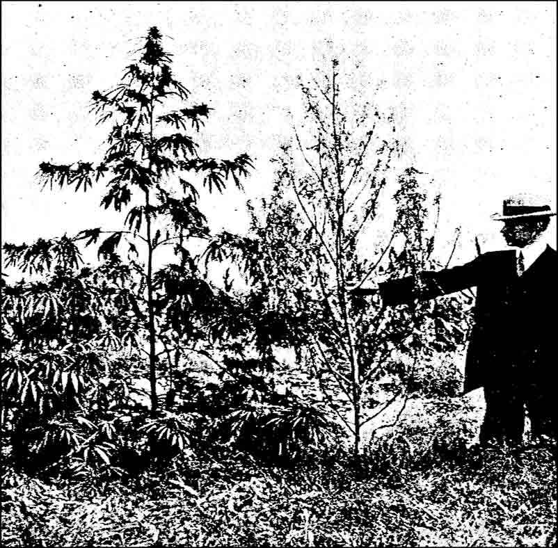
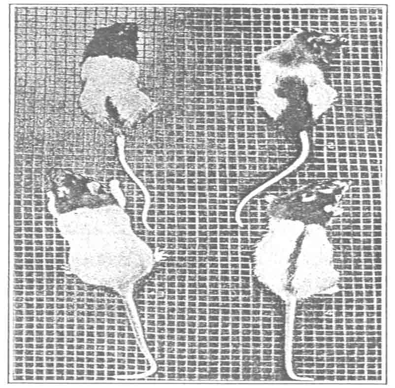
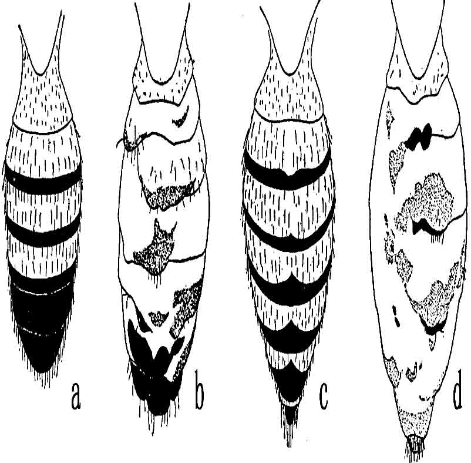
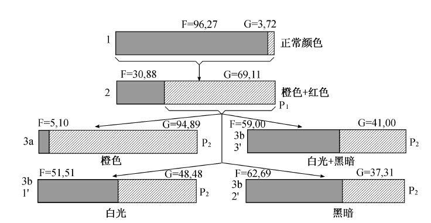
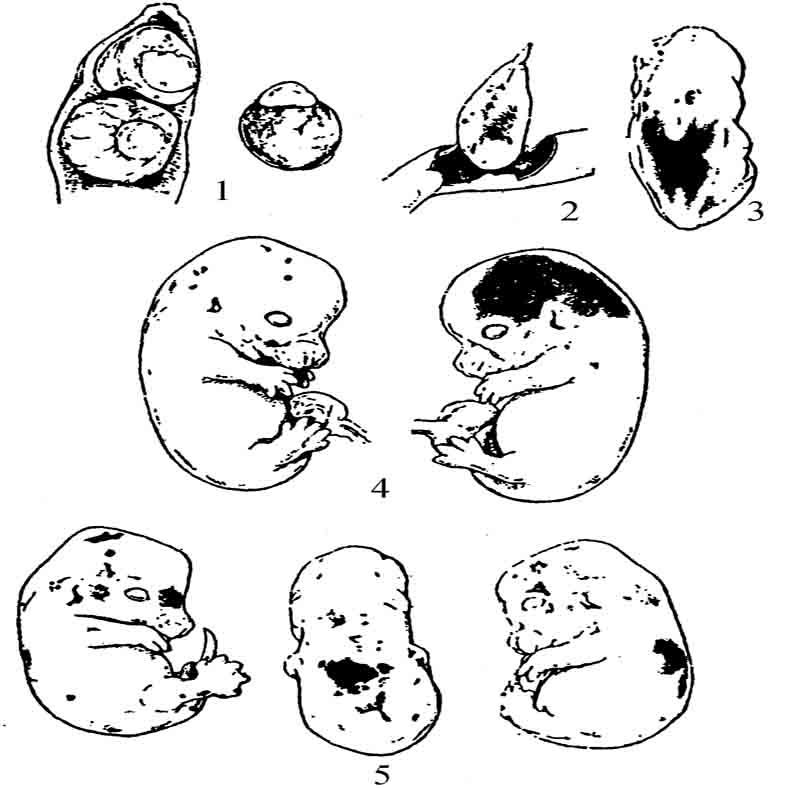
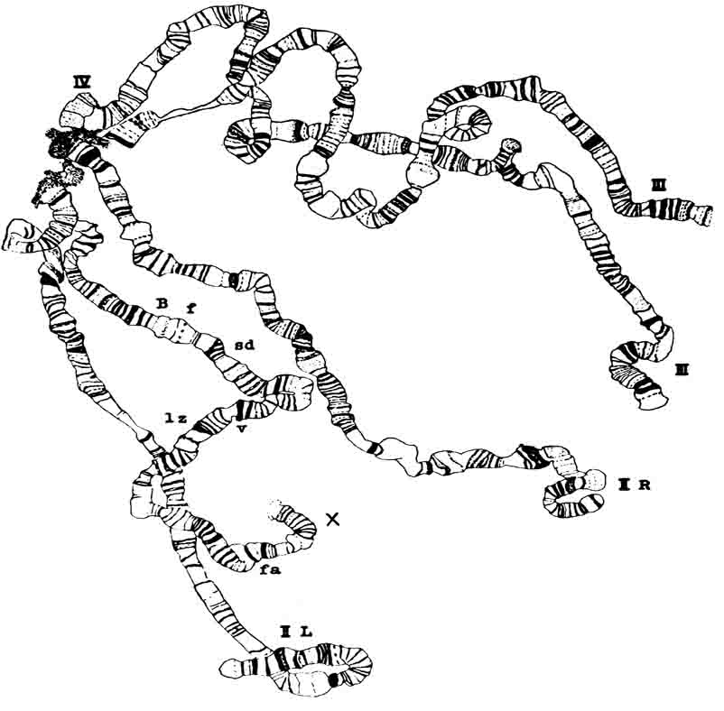
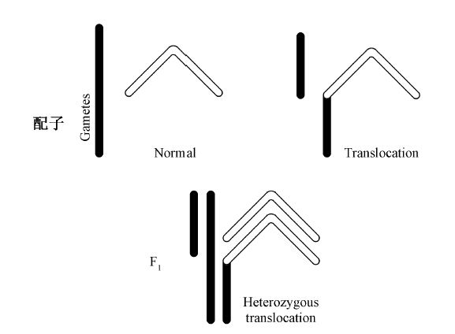
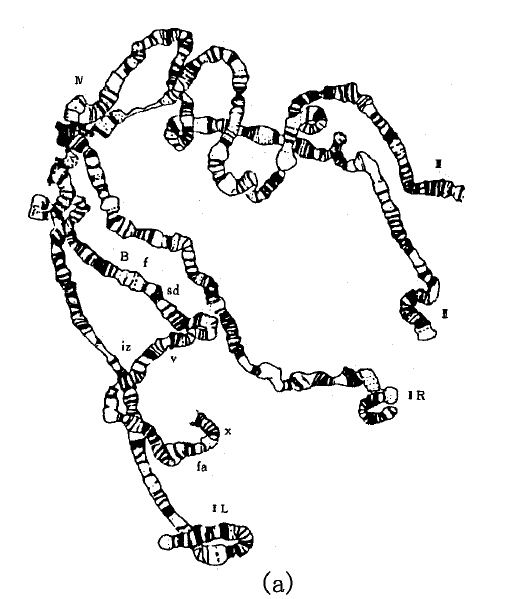
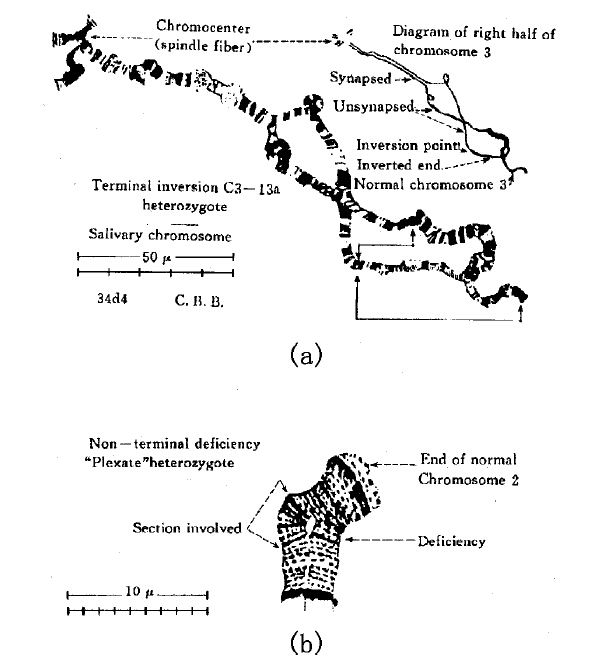

截除鸟类卵巢的影响
完全摘除幼鸡唯一的左卵巢乃是一个相当困难的手术。1916年Goodale有几次成功地做过这样的实验。鸟类发生了雄性羽。Goodale又报导过：鸟体右侧有一个圆形体，附有他所比拟为早期生肾组织的小管。Benoit近来也描述过摘除卵巢对于幼鸟的影响。一般说来，羽、冠、距所受的影响，和Goodale所研究的鸟类相同，但是，另外他还描述了在退化了的左“卵巢”地点，发生了精巢或精巢状器官，并且在已经被除掉的左卵巢的地点上，有时也有一个同样的器官。有一个例子，其中生殖细胞的各个成熟阶段，甚至精子核质固缩，都被找到了。这是现在关于精巢状器官内有精子或者甚至有真正的生殖细胞的唯一记录，所以需要审慎深入检查。在孵出后26天，摘除鸟的左卵巢。六个月后，鸟冠红色、胀大、直立，并且和雄鸟冠一样大。在右侧发生了一个与精巢相似的器官。经组织学检查，发现其内有细精管，管内有精子发生的各个时期。精细胞的胞核固缩；精子稀少，看来也不正常。雄鸟的输精管从这个器官延伸到泄殖腔。精巢基部又有一条管状结构，同幼龄雄鸟的附睾相似。精巢状器官内有精子的，只有这一个记录。在Benoit做过手术的其他鸟体内，虽然发生了精巢状的物体，却没有看到生殖细胞。有否可能在这个例子里犯了一个错误，这只鸟实际上是一个雄鸟呢？另外，Benoit发现在除去精巢以后，鸟冠萎缩，鸟变得同阉鸡相似。在其他例子里还没有这种冠萎缩的报道。但是含有精子的精巢状器的存在，引起了冠和冠垂完全的发育，仍然是很可能的。另一只鸟在孵出后四天被Benoit摘除卵巢，在四个月内出现了一个不平常的器官。经检查后，发现右侧有一个精巢状器官。内含物不详。
Benoit检查了一只幼龄正常雌鸟右侧卵巢原基的组织结构。他对它的描述和对幼龄雄鸟的附睾的描述相同，具有有纤毛的输出管和精巢网。他断言鸟的右生殖腺不是一个未发达的卵巢，而是一个未发达的右精巢，在左卵巢被摘除的时候，才形成了精巢。依我的想法，上面的证据并不支持这个结论，因为人们知道，在脊椎动物生殖器官发育早期中，雌鸟和雄鸟都具备了雄性和雌性两种主要附属器官。所以很可能在正常发育过程受到干扰的时候（摘除左卵巢），这些未发达的器官可以开始发育，并产生精巢状结构，而且根据迄今所报道了的大多数例子，这种结构里面都没有精子。左侧球状器官的存在（Goodale和Domm分别报道过）也似乎支持这个见解，而不利于Benoit的结论。
L.V.Domm（1924）近来发表了幼鸟卵巢摘除结果的初步报道。这些鸟长大为成体，不仅在羽、冠、冠垂和足距方面表现了雄性的第二性征，而且同正常公鸡相斗，发出雄鸟的啼声，并且企图同母鸡交尾。有一只鸟在其正常卵巢（已被摘除）位置上出现一个“白色精巢状器官”。和这个器官一道的，还有一个小卵巢滤泡。鸟的右侧也有一个精巢状器官。另一只鸟的生殖腺和上例相同。第三只鸟，只右侧有一个精巢状器官。以上三个例子都没有被报道过有生殖细胞或者精子。
除非Benoit关于精子存在的观察得到证实，否则还不能肯定地说这些例子就是严格的性转化。除了上述独特的说法外，其他结果似乎肯定地表示，在移去卵巢以后，便发生了一个外形上和精巢相似的结构（精子除外）。我想，这个器官在移去卵巢以后发生，至少暂时是能够用原来在胚胎时期存在的雄性器官原基的次生性生长和长大来说明的。大家知道，把一片精巢移植到雌鸟体内，这片精巢可以继续发育，甚至产生精子，因此，在雌鸟体内维持一个精巢（哪怕是有作用的），这事件本身并不奇怪。
看来，雌鸟的遗传成分（在身体细胞和幼龄卵巢内都有），造成有利于卵巢发育而不利于精巢发育的一种形势。相反，雄鸟的遗传成分，则有利于精巢的发育。不过早期摘除雄鸟的精巢，并不足以引起卵巢特殊结构的发生。
侧联双生蝾螈的性别
几位胚胎学者用侧面愈合的方法，把两个幼螈联合为一体。从卵膜里取出神经褶刚好闭合了的幼胚，截除各个胚胎一侧的部分组织，然后把两个胚胎的这一面接合起来，不久便发生了愈合。Burns研究了这种联合双生的性别，发现同对的两个蝾螈总是同一性别；44对都是雄性，36对都是雌性。按照随意联合的结果，应该得出一对雄性，两对雌性。现在既然在同一对里没有出现一雌一雄，由此可知，要么是这一类的双生类型死亡了，要么就是在这一对里，一只的性别变成了另一只的性别，而且，既然成对的雄性和成对的雌性都是存在的，由此可知有时从雄方传播影响，有时又从雌方传播影响。除非对于这样的交互影响上的差异能够找到某种的解释，否则上述结果不足以证实后一种解释的可靠性。
大麻的性转化
许多显花植物在同一朵花里面，有时在同株异花里面，发生了含卵细胞的雌蕊和含花粉的雄蕊。花粉在胚珠之前成熟，或者另一些例子里，胚珠在花粉之前成熟，都不是稀罕的现象。在其他植物中，一个植株上只发生胚珠，而另一植株只发生花粉，也就是说雌雄是分开的。物种是雌雄异株的。不过在某些雌雄异株的植物里，相反性别的器官也可以以未发育状态出现，它们偶尔还有作用。Correns研究了几个这样的非常例子，并且企图检验它们的生殖细胞的性质。
Pritchard、Schaffner和McPhee最近研究雌雄异株大麻（Cannabis sativa），证明环境条件可以把产生雌蕊的植株（或称雌性）改变成为产生雄蕊甚至有作用的花粉的植株；相反，也可以把一株雄蕊植物改变成产生有作用的卵子的雌蕊植株。
在早春的正规时间内播种大麻种子，产生了数目大约相同的雄性（雄蕊）和雌性（心皮）两种植株（图149），不过Schaffner发现，如果把种子播种在肥沃的土壤内，同时改变其光照时间，大麻便表现出两个方向的性转化。“转化程度约与日光长短成反比”。骤然看来，同一环境竟能使雌株变成雄性，又使雄株变成雌性，这是出人意料的，因为人们会预料相同的条件只会使雌雄两型同向中性或中间状态变化，或者只会使某一性别向另一性别变化。事实上，这一类的情况也似乎发生过，雌株上出现了雄蕊。相反，雄株上也可以出现雌蕊。“性转化”的发生，大抵就是指这种意义而言，虽然也还有另一些情况，其中雌株的一条新枝可以只发生雄蕊，而雄株的一条新枝也只发生雌蕊。在这些极端例子里，几乎可以说“性转化”已经发生在变化了的条件下所发育出来的新部分上。McPhee研究过不同受光时间的影响，发现雄株可以发生带雌蕊的枝条；雌株也可以发生带雄蕊的枝条；不过他指出：和畸态花一道出现的，还有许多性中型的花朵。他说：“在许多例子里，这种变化是相当细微的，目前还不敢作出遗传因子同这些物种里的性别完全没有关系的断然的结论”。

图149 左侧示大麻的雌株，右侧示其雄株（仿Pritchard，载在《遗传学》杂志）
大麻有没有内在的性别决定因子体系（可能是染色体体系），目前还是一个未曾解决的问题，而且，到现在为止，我们只有McPhee关于遗传学证据方面的口头报告，不过这项报告却是重要的。如果大麻的正常雌株为同型配子（XX），正常雄株为异型配子，则当雌株转化为雄性（更正确地说，就是产生有作用的花粉）时，所有的花粉粒在性别决定性能上，将会是一样的，也就是说，这样的雄性是同型配子的。McPhee的口头报告（注：在1925年动物学会会议里。）支持这项见解。相反，如果雄株（XY）转化为雌性，预期可得两种卵子。这似乎也实现了。
Correns早已报道过在其他植物方面略相类似的结果，不过关于配子种为的资料却不能令人满意。希望很快便能找到有关这项问题的证据。但是，即使假定大麻具有性别决定的内在机制（可能属性XX—XY型），我们从性别可以随外因而转化这项发现里，也看不出有任何革新的观点，最低限度，在这些结果里，原则上同决定性别的染色体机制的存在相矛盾的东西，确实是没有的。这样的机制是使平衡在一定环境条件下倾向某一方面的一个因素。染色体机制的意义，就是如此，此外再没有任何其他的解释。这种机制，可以被那些能改变平衡但又能保持在正常工作条件恢复时照常工作能力的外因所压倒。如果以上关于在正常雄性是异型配子的物种里，同型配子的雌性，转化成同型配子的雄性这项试用性结论，得到了证实，那么，在这种关系上便再也找不出比这更好的例子了。事实上，这为性别决定的遗传学见解，提供了另一个确凿可信的证明，对于那些不能了解遗传学者关于染色体机制以及一般孟德尔式现象的解释的人们，这也是一个特别有教育意义的例子。
另一种山靛属植物Mercurialis anura，也是雌雄异体，但雄株上偶尔出现雄花。一株雄性植物上可以有25000朵雄花，雌花却只有1~47朵，而另一方面，雌株上又可以有1~32朵雄花。
Yampolsky报道过在这两类植物自交以后的子代性别情况。雌株自交的子代全是雌性，或者主要是雌性。
除非作出一些颇为武断的假设，否则目前还不可能应用XY公式满意地解释这些结果。例如，如果雌株是XX，则其所产生的全部花粉粒应该都有一条X，因而所有子代应该全是雌性，事实上便是这样。但是，如果雄株是XY，则其成熟卵子一半应该有X，另一半应该有Y。花粉的情况也应该是一样的。自交以后的子代应该是1XX+2XY+1YY。如果YY死亡，子代里就应该有1雌2雄的比例。然而实际结果并不是这样。要使自交的雄株只产生雄性，必须假定X卵子死于配子时期，只有Y卵子才有作用。到现在为止，既没有支持这项假设的证据，也没有反对它的证据。在这方面的证据出现以前，这只能是一个未解决的问题。
第18章 基因的稳定性
严格选择能够使一群的所有个体都达到接近于原群所表现的极端类型，超过这一极端，选择便无能为力了。现在看来，只有依赖一个基因内所发生的新的突变，或者依赖一群旧基因内的集体变化，才有可能发生进一步或者退一步的永久进展。
杜布赞斯基原籍苏联，慕摩尔根之名来到哥伦比亚大学学习和工作，后又随摩尔根来到加州理工学院。他提出的“综合进化理论”被认为是达尔文之后进化论最重要的进展。
以上所谈到的种种，都含有基因是遗传中一个稳定的要素的意思。至于基因的稳定究竟是化学分子的哪一种稳定，或者仅仅是在一个固定标准附近定量地彷徨变化，因而表现稳定，却是理论上或根本上的一个重要问题。
我们既然不能凭借物理方法或化学方法直接研究基因，所以我们关于基因稳定性的结论，必须根据它的效应推论出来。
孟德尔遗传理论假定基因是稳定的。它假定：各个新体所给杂种的基因，在杂种的新环境内仍然完整。现在举出几个例子来回忆一下有关这项结论的证据的性质。
Andalusian鸡有白色、黑色和蓝色三种个体。白鸡与黑鸡交配，产生蓝色鸡。两只蓝色鸡交配，子代分黑色、蓝色和白色三种，三者的比例为1∶2∶1。在蓝色鸡内，白色基因同黑色基因分离。半数的成熟生殖细胞得到黑色要素，半数得到白色要素。任何卵子同任何精子任意受精，孙代将得出所观察到的1∶2∶1。
关于杂种内有两种生殖细胞的这个假设是否正确，可以检验如下。蓝色杂种如果回交纯种白鸡，子代一半为蓝色鸡，一半为白色鸡。如果蓝色杂种回交纯种黑鸡，子代一半为黑鸡，一半为蓝色鸡。两次结果都符合于这一假设：蓝色杂种的基因都是纯洁的，一半是黑色基因，一半是白色基因。两者同居在一个细胞之内，却没有互相污染。
上例中的杂种与两亲不同，从某种意义说来，它是两亲之间的中间型，在第二个例子里，杂种同一个亲型没有分别。当黑豚鼠和白豚鼠交配时，子代全黑。子代回交，孙代为三黑一白。孙代的白豚鼠像原来白豚鼠一样又繁殖白豚鼠。白基因虽然与黑基因在杂种体内同居一处，却没有受到污染。
再选一个例子，其中两亲很相类似，杂种虽然表现某种程度的中间性，但是变化这么大，以致变化的两端和两个亲型分别重叠。这些类型只有一对基因的差别。
黑檀色果蝇同炱黑色果蝇交配，子代像上文所谈到的那样呈中间色，并且变化很大。子代自交，孙代颜色由淡而深，构成一个实际上是连续的系列。不过也有些方法来测验这些深浅不同的颜色。测验结果，发现孙代颜色系列由黑檀色纯种、杂种、和炱黑色纯种三种个体组成，三者的比例是1∶2∶1。这里我们又有了基因未曾混杂的证明。颜色深浅的连续系列只是性状变异性互相掩盖的结果。
以上各例只涉及一对不同的基因，所以一切都简单明了。这些例子帮助了基因稳定原则的树立。
然而事实上，现实情况往往不是这么简单。许多类型在几个基因上互不相同，每个基因对于同一个性状都有它的影响。因此，在它们的杂交里便看不到简单的比例。例如，长穗同短穗两族玉蜀黍杂交，下一代的穗轴长短适中。子代自交，孙代出现各种长度的穗轴。有些像原来短穗族那样短，有些像原来长穗族那样长。两者都是极端。两者之间有一系列的中间型。检验孙代个体，表明有几对基因影响穗轴的长短。
另一个这样的例子是人的身高。人身长大可能由于腿长，或者由于躯长，或者两者兼备。有些基因可以影响所有部分，而另一些基因对于某一部分有着更大的影响。其结果是遗传情况复杂，而且还没有得到解决。此外，环境对于最后产品也可能有某种程度的影响。
这些都是多对因子的例子，遗传学工作者企图决定在每个杂交里究竟有多少个因子，结果之所以复杂，只是因为所牵涉的是几个基因或者许多个基因。
在孟德尔发现被揭露以前的时期里，正是这一类的变异性，为自然选择理论提供了它所依据的证据，这个问题留待以后考虑。首先必须谈谈我们在认识选择学说中的一些限制上，由1909年Johannsen光辉的研究所取得的伟大进展。
Johannsen用一种圆艺植物——公主菜豆，进行实验。这种菜豆完全借自花授粉繁殖。长期连续自交的结果，每个植株都变成了纯合子，这就是说，每对的两个基因都是相同的。因此这类材料适合于进行精密的实验，借以决定菜豆上的个体差异是否受到选择的影响。如果选择改变个体的性状，在这种情况下，选择必须先改变基因本身才行。
每个植株上的豆粒大小略异，而且按豆粒大小排列时，会得出常态几率曲线。不管连续从各个世代中选出的，是大豆粒或是小豆粒，合并而成（仿Johannsen）任一植株以及它的一切后代，在豆粒大小上，都表现了同样的分布曲线（图150）。后代总是结出同样的一群豆粒。

图150 a~e群的菜豆代表五个
纯系；下面a~e群是由五个纯系合并而成（仿Johannsen）
从他检查过的材料里发现了九族菜豆。他认为他的研究结果足以说明某一植株其所以豆粒大小不同，是由于最广义的环境所引起的。只需要在选择开始时选用每对两个相同基因的材料，便可能证实这一论点。这证明了选择对于基因本身的改变，没有影响。
如果在开始时选择有性生殖的动物或植物不是纯合的，那么，直接结果就会不同了。这点有了很多实验上的证明，例如Cuénot的斑毛鼠实验，MacDowell的家兔耳长的实验，或者East和Hayes玉蜀黍的实验。任何一个实验都可以作为一个例子来说明在选择下所发生的变化。这里只举出一个例子便够了。
Castle研究了选择对于一族披巾鼠毛色式样的影响（图151）。他开始用市售的披巾鼠的子代实验，一头选择条纹最宽的鼠，另一头选择条纹最窄的鼠，并且把两系分隔开来。经过几个世代以后，这两群披巾鼠表现了适度的差异：一群的背条平均比原来的一群宽一些，另一群的背条又要窄一些。选择作用已经以某种方法改变了条纹的宽度。到现在为止，在这些实验结果里，还没有一点可以证明：这种变化不是由于选择把决定背条宽度的两组因子分离开来所引起来的。但是Castle却认为，他是在研究一个基因的效应，因为当披巾鼠同全黑鼠（或全褐鼠）杂交，以后子代杂种又进行自交时，孙代便得出全黑（或全褐）鼠和披巾鼠两型，互成3与1之比。这种孟德尔式比例确实证明了毛上的有色条纹起源于一个隐性基因，但是却没有证明：这个基因的作用，有可能受到与背带宽度决定有关的其他遗传因子的影响的，这才是真正争论的问题。

图151 披巾鼠的四个类型（仿Castle）
以后Castle进行了Wright所设计的一个实验，事实上证明：这些结果，是由于条纹宽度的修饰基因被隔开来所引起的。检验方法如下：经过精选以后的各族，回交野鼠（即全身黑色或褐色），得出第二代的条纹鼠。再用第二代条纹鼠回交野鼠。经过两三代回交以后，发现被选择的一群，好像又变回了原来的样子。选出来的窄带的一族向宽带变化，而选出来的宽带的一族却向窄带变化。换句话说，精选的两族愈来愈相同，愈来愈和它们最初的原来那一族相同。
这项实验结果完全符合于下一见解，即野鼠有修饰基因影响着条纹鼠条纹的宽度。换句话说，原来的选择作用，把变宽基因同变窄基因分离开来，从而改变条纹的性质。
有一个时候，Castle甚至宣称：披巾鼠实验结果重新建立了他所谓的达尔文的见解，以为选择作用本身使遗传物质照着选择方向发生变化。如果这真正是达尔文的意思，那么，这种对变异的见解似乎可以大大地巩固了进化借自然选择而进行的理论。1915年Castle说道：“我们现在所拥有的全部证据，表明了外界的修饰因子不能解释在披巾式样中所看到的这些变化，披巾式样本身便是一个明确的孟德尔单元。我们不能不作出下一结论：单元本身在反复选择下向着选择的方向变化着；有时，突然像在我们的‘突变’族那样，突变族本身是一个高度稳定的正变异；但更多的是逐渐的变化，像在正的和负的两个选择系列中不断发生的那样”。
次年，他说道：“目前许多遗传学者认为单元性状是不可改变的。……几年来，我研究过这个问题，在这一点上得到了一个总的结论，那就是，单元性状可以改变，也可以重新组合。许多孟德尔学派的人们另有一种想法，不过我相信，这是因为他们研究这个问题还不够精密的缘故。单元性状发生定量的变异这件事实是不会错的。……选择作为进化中的一个动力，必须恢复它在达尔文估计中的那种重要地位，它是一个能够产生连续而进步的种族变化的动力。”
达尔文是否相信选择过程决定或影响未来变异的方向呢？仔细读一下达尔文的论著，除非我们引用达尔文关于获得性遗传的另一项学说，否则是找不到一点明文上的证据的。
达尔文坚决信仰拉马克学说。每当自然选择的学说碰到困难的时候，他毫不犹豫地运用这个学说。因此，任何人只要他愿意（虽然达尔文本人未把两说混为一谈，Castle也没有这样做），都可以逻辑地指出，每当一个有利的类型被选择时，它的生殖细胞就好像受到了自己身体所产生的泛子的影响，而且可以预料它会按照被选择的那种性状的方向去改变。所以每一个新的进展，势必从一个新的基础出发，如果围绕这个新的中数（作为一个突破以前限度的中数）发生了彷徨变异，那么，在前一个进展的方向上，预计会出现更进一步的进展。换句话说，自然选择势将按照每次选择的方向更前进一步。
但是，像我上面所谈过的，达尔文从来没有运用这一论点来支持他的选择学说，虽然人们也可以认为每逢达尔文看到自然选择不够解释事物，只好援引拉马克原理来支持这个新的进展的时候，原则上他是这样做的。
今天我们把选择作用，不论是自然的或人工的，都看成是最多只能在原有基因组合可以影响的变化范围内引起变化；或者说选择作用不能使一群（一个物种）超过这一群原有的极端变异。严格选择能够使一群的所有个体都达到接近于原群所表现的极端类型，超过这一极端，选择便无能为力了。现在看来，只有依赖一个基因内所发生的新的突变，或者依赖一群旧基因内的集体变化，才有可能发生进一步或者退一步的永久进展。
这个结论不仅是从基因稳定性理论得来的逻辑的推论，而且也根据于很多观察，这些观察表明每逢一群生物遭到选择时，它们开始变化很快，很快便缓慢下来，不久便停止了变化，而与原群中少数个体所表现的一种极端类型相同或相接近。
以上只就杂种内基因的沾染方面以及从选择观点，来考虑基因的稳定性问题。关于躯体本身可能影响基因的组成一点，不过仅仅接触了一下。如果基因受到杂种躯体性状的影响，那么，作为孟德尔第一定律基本假定的关于杂种体内基因的精确的分离，势必是不可能的了。
这项结论使我们面对着拉马克的获得性遗传理论。这里不拟考虑拉马克理论的各项主张，那样做会离题太远，不过容许我提请大家注意某些关系，这些关系是在这个学说所假定的躯体影响生殖细胞的情况下，也就是说在一种性状上的一个改变，可以引起特殊基因内的相应改变的情况下，期望得到的那些关系，几个例子便可以说明其中的主要事实。
黑家兔同白家兔交配，杂种家兔黑色，不过杂种的生殖细胞却分为产生黑毛和产生白毛两型，各占半数。杂种的黑毛不能影响产生白毛的生殖细胞。不论白毛基因在黑毛杂种体内停留多久，白毛基因总是白毛基因。
如果把白毛基因说成是某种实体，那么，假定拉马克理论能够成立，就应该表现出这个基因所寄居的个体躯体性状的一些效应。
然而如果把白毛基因说成是黑毛基因的缺失，便自然谈不上杂种的黑毛能够影响一个并不存在的东西了。对于任何主张存缺理论的人们说来，用这项论点来反对拉马克理论，是不足以使它们信服的。
不过从另一方面考虑，也许更为恰当。白花紫茉莉同红花茉莉杂交，产生中间型杂种，开桃色花（图5）。如果把白色说成是一个基因的缺失，那么，红色必定起源于一个基因的存在。杂种花的桃色比红色淡些，如果性状影响基因，则杂种体内的红花基因应该被花的桃色冲淡。这样的效应在这里以及其他材料里都没有记载下来。红花基因同白花基因在桃色杂种内分离开来，没有显出任何样的躯体影响。
另一证据，在反驳获得性遗传理论上，或许更为有力。有一种果蝇，称为不整齐腹缟，其腹部整齐的黑缟或多或少地消失了一些（图152）。从食物丰富、潮湿而带酸性的培养基里最初孵化出的果蝇，其腹部黑缟消失最多。以后，培养基愈久愈干，这时孵出的果蝇也就表现出愈来愈正常的形状，直到最后同野生型果蝇没有区别为止。这里，我们碰到一个对环境影响极其敏感的遗传性状。这一类性状，为研究躯体对于生殖细胞的可能的影响，提供了有利的机会。

图152 a.正常雄蝇的腹部；b.不整齐腹缟雄蝇的腹部；c.正常雌蝇的腹部；d.不整齐腹缟雌蝇的腹部
把最先孵化出来的腹缟高度不整齐的果蝇和孵化较晚的正常腹的果蝇，在同一条件下，同时分别繁育，两者的子代完全相同。最先孵化出来的果蝇，腹部不整齐，以后孵化出来的果蝇，则比较正常。对生殖细胞来说，亲体的腹部正常与否，是没有一点区别的。
如果说影响也许太小，以致在第一子代还不能看出，那么让我补充一句，较晚孵化出来的果蝇曾经连续繁殖了十代，结果也看不出任何差异。
另一个例子也同样确凿可信。有一个突变型果蝇称为无眼型（图30）。它们的眼比正常眼小，而且变化很大。经过选择，得出了一个清一色的原种，其中大多数果蝇无眼，不过当培养时间愈来愈久，有眼果蝇也就愈来愈多，眼也愈来愈大。如果把这些后期孵化的果蝇繁育起来，它们的子代同无眼果蝇的子代是一样的。
在不整齐腹缟的例子里，晚期孵化中的幼虫，其对称和色素形成都不是一个明显的存在性状。这里，在晚期孵化出来的果蝇里，眼的存在却是一个正的性状，可能被认为是比不整齐腹缟的例子更好的一个证据。然而两例的结果仍然是一样的。
近几年来，有许多人自以为提供了获得性遗传的证据，这里完全不必要逐个考虑。我只选出一个有结论所依据的数字的和定量的资料，因而是最完备的例子来说。我所指的是Dürken最近的研究。这个实验似乎是仔细进行的，而且对Dürken来说，它为获得性的遗传提供了一个证据。
Dürken用甘蓝粉蝶（pieris brassicae）幼虫进行研究。1890年以来便已知道：某些蝶类的幼虫化蛹（即从幼虫变为静止的蝶蛹）时，蛹的颜色受到环境的几分影响，或者受到照射光线颜色的几分影响。
例如，粉蝶幼虫如果在白昼甚至在弱光下生活、转化，则蛹色很黑；如果在黄色和红色环境，或者在黄色和红色帘后生活、转化，则蛹呈现绿色。绿色之所以形成，是由于缺乏表层黑色素。如是内部的绿黄色透过表皮表现出来（图153）。

图153 中央为粉蝶四个不同颜色的蛹。在它们的外边，表示在不同颜色的类型里，表皮内色素细胞的特殊排列（仿Leonore Brecher）
Dürken的实验是在橙色（或红色）光下饲养幼虫，由此得到浅色或绿色的蛹。由蛹转化而成的蝶则放在野外笼内饲养，并且收集它的卵子。从这种卵子孵化出来的幼虫，有些放在有色光线下饲养，另一些则放在强光或黑暗中饲养。后者用为对照组。实验结果的摘要见图表（图154）。图中用黑条长度表示黑色幼虫的数目，用浅色条表示绿色或浅色的幼虫数目。事实上，蛹分为五个有色群。其中三群合并成黑色，另外两群则合并成浅色。
像图154.1（代表正常颜色）所表明的，几乎所有自由收集或者在自然环境下收集的蛹都是黑色的；只有少数才是浅色或绿色。从这里产生的幼虫放在橙色环境内饲养。幼虫转化成蛹，其中浅色类型的百分比很高，如154.2。如果只选出浅色类型予以饲养，有些放在橙色光下，有些放在白光下，其他放在黑暗中，结果如154.3a和154.3b所示。3a的浅色蛹比上一代多，因为在橙色下连续两代，效果加强了。不过3b的一组更为重要。在白光或黑暗中饲养的比在野生型1中出现更多的浅色蛹。Dürken认为浅色蛹的增加，一部分归之于橙色光对于上一代的遗传效应，一部分归之于新环境的相反方向的效应。

图154 粉蝶中，黑色蛹和浅色蛹的选择结果（仿Dürken）
从遗传学观点看来，这种解释是不令人满意的。第一，这个实验证明，并不是所有幼虫对橙色光都有反应。如果有反应的幼虫具有不同的遗传性，那么，当选择它们——即实验中的浅色蛹——进行一次橙色光实验而对照组则放在白光和黑暗中实验时，我们已经是在运用一个反应较强的类型，一群经过了选择的类型，而且预料它们在下一代会再度反应，事实上确是如此。
因此，除非一开始便采用遗传上同质的材料，或者采用其他对照实验，否则这项证据绝不能证实环境的遗传效应。
几乎所有这一类的研究工作，都犯了同样的错误。即令现代遗传学没有作出更多的成绩来，单就指出这类证据毫无价值一点来说，也足以证明现代遗传学是正确的。
现在我们转到另一些例子，其中有一些很可能是生殖细胞经过特殊处理后直接受到了损害，并且受到损害的生殖物质被遗传给以后各代。由于有了这种损害，以后各代中可能发现畸形。这就是说，上述处理并不是借着先产生胚胎身上的缺陷来影响生殖物质，而是同时影响了胚胎和它的生殖细胞。
Stockard在酒精对于豚鼠的影响问题上，进行过一长串的实验。他把豚鼠放在有酒精的密闭箱中。豚鼠呼吸饱含酒精的空气，几小时后，便完全失去知觉。有些豚鼠在处理中进行交配，有些在处理结束后进行交配，两者的结果基本相同。许多胎儿流产了或者被吸收了，另一些生下来便是死的，还有一部分表现了一些畸形，特别是神经系统和眼的畸形（图155）。只有不表现缺陷的豚鼠才能交配。在它们的子代中，畸形幼龄豚鼠和表面上正常的个体不断出现。在更后的世代里，畸形豚鼠继续出现，不过只能从一定个体产生出来。
检查经过酒精处理的谱系，看不出实验结果符合于任何已知的孟德尔式比例的证据。甚至，畸形豚鼠所表现的各种部位上的效验，也不像在单个基因改变时所看到的那样。另一方面，这些缺陷，同我们在实验胚胎学中所熟悉的受到毒物处理以后的卵子发育异常，有许多共同之点。Stockard已经唤起人们对这些关系的注意，并且认为他的实验结果意味着酒精使生殖细胞产生某种损害，有关遗传机制中某一部分的损害。效应之所以局限于某些部分，仅仅因为这些部分对于任何脱离发育正轨的变化最为敏感。这些部分以神经系统和感觉器官最为常见。

图155 酒精中毒的祖先所产生的两只不正常的幼龄豚鼠（仿Stockard）
最近，Little和Bagg进行了一系列实验，研究镭对于妊娠鼷鼠和大鼠的影响。在适当处理下，子宫内的胎儿可能有畸形发育。产前检查，看到了脑脊髓或其他器官（特别是四只原基）有出血区域（图156）。在这些胚胎当中，有的在产前死亡，并且被吸收了；另一些则造成流产。还有一些活着生出来，其中有一些生存下来，可以繁殖。它们的后代往往表现出脑或四肢上的缺陷。也许一只眼或者两只眼有缺陷。

图156 大鼠母体受镭射线照射后，
子宫内胎儿表现出血区域（仿Bagg）也许没有眼睛，或者只有一只很小的眼。Bagg用这些鼷鼠交配，在它们所产生的许多畸形子代个体中，看到了和原来胚胎身上直接引起的缺陷大致相似的缺陷。
我们应该如何解释这些实验呢？是不是镭首先影响正在发育中的胚胎的脑髓，引起缺陷，然后由于脑髓上有这些缺陷，于是同一胚胎的生殖细胞才受到影响呢？这项解释显然是不通的。当脑髓单独受到影响时，下一代应该期望出现脑的缺陷；当眼是受影响的主要器官时，下一代应该只表现出眼的缺陷。然而在所有报道中，都没有看到这样的结果。畸形脑和正常眼的鼷鼠可以产生有缺陷眼的子代。换句话说，这里没有特定效应，只有一般的效应。
另一种解释则认为：在子宫内，幼鼠的生殖细胞受到镭的影响。当这些生殖细胞发育成为新世代的个体时，这些个体也有缺陷，因为最容易在正常发育上受阻扰的器官，也就是最容易被发育中任何改变所影响的那些器官。总之它们是最软弱或者平衡最精微的一个发育阶段，因而首先表现出任何脱离常轨的影响。我想，这就是目前这些实验和其他类似实验的最合理的解释。
第19章 总结
以前各章讨论到两个主题：随着染色体数目改变而来的效应和随着染色体内部改变（基因突变）而来的效应。基因论虽然偏重基因本身，但也广泛地包括上述两种变化。习惯上，突变这个词也已经用来包括两种方法所产生的效应了。
我们仍然很难放弃这个可爱的假设：就是基因之所以稳定，是因为它代表着一个有机的化学实体。这是现在人们能够作出的最简单的假设，并且，这项见解既然符合于有关基因稳定性的已知事实，那么，至少它不失为一个良好的试用假说。
沃森（左）和克里克（右）正在研究用铁丝建造的DNA模型。
以前各章讨论到两个主题：随着染色体数目改变而来的效应和随着染色体内部改变（基因突变）而来的效应。基因论虽然偏重基因本身，但也广泛地包括上述两种变化。习惯上，突变这个词也已经用来包括两种方法所产生的效应了。
这两种变化，同当前的遗传学理论，有着重大的关系。
由于染色体数目上的改变以及由于基因内的改变而产生的效应
当染色体数目增加二倍、三倍或任何倍数时，个体所有的各种基因依然如旧，而且各种基因之间依然维持着同样的数字比例。如果没有胞质体积可能不随基因数目增加而扩大的话，那么这种基因数目上的改变是没有影响个体性状的希望的。胞质不能相应地增大的真正意义，目前还不明了。总之，实验结果表明三倍体、四倍体、八倍体等，在任何性状（除体积外）上，同原来的二倍体类型并没有明显的差异。换句话说，所产生的改变也许很多，但同原来的变化比较，却没有显著的区别。
另一方面，如果原来的一群染色体里增加了一二条同对的染色体，或者增加了两条以上的异对的染色体，或者减少了一整条的染色体，那么，就可以预期这些变化含在个体身上产生比较明显的效应。有一些证据指明，在原来染色体很多，或者发生变化的，是一条小染色体的情况下，这一种增减是不会激烈的。从基因观点说来，这种结果是预料得到的。例如，增加一条染色体，便意味着有很多基因加到三倍。从某类基因比以前增加的意义来看，基因间的平衡是改变了的，但是由于没有增加新的基因，预料这种变化的效应会表现在许多性状上面，表现在强度有所提高或减低的许多性状上面，有的提高了强度，有的减弱了强度。这是符合于现在所知道的一切事实的。但是，值得注意的是，就现在我们所知道的看来，一般的结果都是有害无利的。如果像根据正常个体的长期进化历史所预测到的，正常个体对于内在关系和外在关系的适应，是尽可能完善的。那么，这一点倒也是在意料中的。
这样的变化轻微地影响着许多部分，但不能由此得出结论，以为这种效应比较单个基因变化所引起的每次一步的变化，更容易导致建立一个存活的新型。
另外，两条同类染色体的增加虽有可能产生一个稳定的新遗传型，但是甚至这也无济于事，因为就我们现在已经知道来的说（目前还缺少证明），这里的适应反而比以前更加恶化了。由于这些理由，要用这种方法把一个染色体群变化成另一个染色体群，虽然不是绝不可能，也似乎不是容易做到的。目前我们需要更多的证据来解决这个问题。
一群染色体里有时增加或减少了一染色体上的某些部分。在这种情况下，上面的理论也同样适用，虽然也许更无力一些。这种变化的影响，同前例性质是一样的，不过程度上比较小些，因而更难于决定它们对于生活力的最后影响究竟是有害或者有利。
近几年来，遗传学研究已经阐明了亲缘关系相近的各物种之间，甚至在整个一科或一目之内，虽然有着同样数目的染色体，但也不能因此冒昧假定，甚至在亲缘关系相近的物种之间，染色体上的基因一定是相同的。遗传学证据正在开始阐明，通过染色体内或群基因位置上的颠倒，以及通过不同染色体之间或成段基因的易位，染色体都可以重新改组，而体积上没有显明的差异。甚至整条染色体之间，也可以各式各样重新组合，而不改变原来的数目。这类改变势必深刻地影响连锁关系，从而深刻地影响各种性状的遗传方式，但基因的种类和总数却没有改变。因此，除非细胞学观察得到遗传学研究上的证实，否则把染色体数目相同，看成是基因群也完全相同，这项假设总是不妥当的。
染色体的数目可以借两个方法改变：第一，两条染色体联合成一体，例如附着X染色体；其次，染色体断裂成片，像Hance所报道的待霄草以及其他几个例子。Seiler所描述的蛾类某些染色体暂时的离合，特别是他所假定的，分离后的要素有时可以重新结合，也属于这一类。
骤然看去，同大量基因所产生的影响相比，由一个基因内的一个变化所产生的影响，显得更为激烈。但是这个最初的印象也许是很错误的。遗传学者所研究的许多最显著的突变性状，和同对的正常性状相比，固然有着显著的差异，但是这些突变性状之所以屡被选为研究的资料，也正因为它们与典型性状判然不同，从而能在以后世代间容易分辨出来。它们的鉴别是准确的，并且同细微差异，或互相掩叠的同对性状相比，结果也比较可靠。改变愈怪愈烈，有时甚至达到“畸形”的程度，则引起人们注意和兴趣的机会也就最大，所以就被人们利用来研究遗传，而不显明的改变，则被人们忽视或放弃了。遗传学者都熟悉下列事实：即对于任何一群的特殊性状，研究愈深入，则开始时被忽视的突变性状，也被发现愈多，这些性状既然同正常型性状极相近似，所以突变过程既涉及很大的改变，又同样涉及很小的改变，也就愈来愈明白了。
以前的文献中把激烈的畸形称为“怪异”（突变＝sport），很久以来，人们以为这种怪异同所有物种中经常存在的细微差异或个体差异，即普通所说的变异，可以鲜明地区分开来。现在我们知道，这种鲜明的对比是不存在的，怪异和变异可以有同样的起源，并且按照同样的规律遗传。
许多细微的个体差异，确实是由发育时的环境条件所引起的，而且肤浅的观察往往不能把它们同遗传因子所引起的细微变化区分开来。现代遗传学最重要的成就之一，就是承认这一事实，并且创制出一些方法来指明细微差异究竟起源于哪一种因素。如果像达尔文所假定的那样，如果像现在一般所承认的那样，进化过程是借细微变异积累的缓慢过程而进行的，那么，受到利用的，一定是遗传上的变异，因为能够遗传的只是这些变异，而不是起源于环境影响的那些变异。
但是不应该根据上面所谈的，设想躯体上某个特定部分的突变，仅仅产生一个显著的改变，或者一个细微的改变。相反，从研究果蝇所得到的证据，同精密研究其他一切生物所得到的证据一样，证明了：甚至在一个部分改变最大的情形下，躯体上几个部分或者所有部分，也常常出现其他种种效应。如果我们根据这些突变体的活动、孕育性和生命长短来判断，那么，这些副作用不仅涉及结构上的改变，而且涉及了生理效应。例如果蝇恒飞向光源，但当一般体色发生细微改变时，向光性也便跟着消失了。
相反关系也一定存在。一个影响生理过程和生理活动的突变基因，其细微的改变可以常常带有外部结构性状上的改变。如果这些生理变化能够使机体更好的适应它的环境，这些变化便有继续存在的希望，有时也有促成某些新型生存的希望。在恒定而细微的表面性状上，新型可以同原型有所区别。既然许多物种间的差异，似乎都属于这一类，所以我们可以合理地认为：它们的恒定性的原因，不在于它们本身的生存价值，而在于它们同其他内部性状的关系，这些内部性状对于这一物种的安全，是重要的。
根据上面所谈的种种，我们能够合理地解释整条染色体（或某条的一个部分）所引起的突变同单个基因所引起的突变两者间的差异。前一种变化并没有增加一点本质上新的东西。它仅仅涉及或多或少的已经存在的东西，而且效应的程度虽然微弱，但却影响了大量的性状。后一种变化——单个基因内的突变——也可以产生广泛而细微的效应，不过除此以外，躯体的某一部分改变较大，同时，另一部分改变较小，这种情形也往往有之。像我已经说过的，后一种变化，为遗传学研究提供了有利的材料，这些变化已经广泛地被利用了。正是这些突变，现在占据了遗传学刊物的最前页，而且引起了一般错觉，以为每一个这样的突变性状只是一个基因的效应，由此又引申到另一个更严重的谬论，认为每个单位性状在生殖物质内，有一个单独的代表。相反，胚胎学研究却证明了：躯体上的每一个器官，乃是一个最后的结果，是一个长串过程的顶点。一个变化如果影响了过程中的任何一个阶段，它也往往会影响最后的结果。我们所看到的，正是这个显著的最后效应，而不是发生影响的那一点。如果，像我们可以容易假定的，一个器官的发育涉及很多步骤，而且如果其中每一步骤都受到许多基因作用的影响，那么，不论那个器官是多么细小或者微不足道，在种质里是没有它的单个的代表的。举一个极端的例子来说，假设所有基因对于躯体上每一个器官的发生都有影响，这也只是说：它们都产生了正常发育过程所必需的化学物质。这样，如果一个基因发生变化，因而产生了与前不同的物质，则最后结果也可以受到影响，如果这变化对于某个器官影响特别巨大，那么，这个基因便似乎单独产生了这种效应。在严格的因果意义上，这是对的，但是这种效应，只是在同其他一切基因的联合作用下，才产生出来的。换句话说，所有基因依然同以前一样，对于最后结果都作出了贡献，仅仅由于其中一个基因的差异，于是最后结果也便有了差异。
在这个意义上，每个基因对于一个特定的器官，可以发生特定的效应，但是这个基因决不是那个器官的唯一代表，它对别的器官，甚或对于躯体上所有的器官或性状，也有同样特定的效应。
现在回到我们的比较上来。一个基因（如果是隐性，自然就涉及一对相同基因）内的变化，比较基因源来数目二三倍的增加，更容易破坏全体基因间的固有关系，所以前者屡屡产生更局限的效应。引申一下，这项论点似乎意味着，每个基因对于发育过程各有一个特定的效应，这同上面主张全部或许多基因联合活动来产生确定而复杂的最后产物这个见解，并不矛盾。
目前拥护各个基因特定效应的最好论证，是许多个多等位基因的存在。同一个基因点内的一些变化，主要影响了同一种的最后结果，这种最后结果不只限于一个器官之内，而且也包括了所有受到明显影响的一切部分。
突变过程是否起源于基因的退化？
德弗利在他的突变理论中，谈到我们现在所称为突变隐性型的那些类型，认为是起源于一些基因的缺失或僵化。他把这样的变化看成是退化。同时或者稍后，主张隐性性状起源于生殖物质内一些基因的损失的观念已经是风行一时了。目前有几位原来醉心于进化的哲学讨论的批评家，对于遗传学者所研究的突变型同传统的进化理论有任何关系的观念，进行了猛烈的抨击。对于后一主张，我们姑且不谈，可以把这一争论留待将来解决。至于说单个基因上所发生的突变过程只限于基因的损失或部分损失，或者退化（我冒昧地这样称呼这种变化），这项主张却是理论上颇为重要的一个问题；因为正如Bateson在其1914年演说中所精密阐明的，从这项主张自然地引到另一观念：就是我们在研究遗传中所用的材料起源于一些基因的损失；这些缺失实际上就是野生型基因的等位性；而且只就这项证据在进化方面的应用说来，这会引到一个谬论，那就是，这个过程是对于原有的基因库藏中的一种经常的消耗。
现有的有关这个问题的遗传学证据，已经在第6章中讨论过了，无重复叙述的必要，不过容许我重复一下：如果根据许多突变性状都是缺陷或者甚至是部分的或完全的损失这一事实，便断定它们一定是起源于生殖质内有关基因的缺失，这是没有理由的。缺失假说的武断姑且不谈，仅就有关这项问题的直接证据来说，像我已经企图证明过的，都是不支持这样的观点的。
但是还剩下一个颇有兴趣的问题，就是那些引起了突变性状（不论是隐性、中间型或显性都是一样）的基因上的一些变化或许多变化，是否由于一个基因的分裂，或者由于它改造成另一种要素，从而产生略不相同的效应呢？除非先验上认为一个高度复杂的化合物的破坏，比它的组成更为可能，否则没有理由来假定：这样的变化——如果发生了的话——是一个走下坡路的变化，而不是另一个比较复杂的基因的生成。在我们更多地知道基因化学组成以前，要论证两方面论点的是非曲直，是十分劳而无功的。对遗传理论说来，只需要假定任何样的变化都够以成为所看到的事实的基础便行。
要在目前讨论新基因究竟是在旧基因以外独立发生，也是同样无用的，如果还要讨论基因究竟如何独立发生，那就更糟糕了。我们现有的证据，并未提出任何根据来支持新基因独立发生的见解，不过要证明它们没有发生，虽然不是绝不可能，也应该是极端困难的。对古人说来，河泥化蟮，腐草化萤，并不是毫不可信的。仅仅一百年以前，人们还相信细菌是从腐物中发生出来的，而且，要证明没有这回事，反而感到非常困难。现在要向坚持基因独立发生这项信念的人们确切证明基因不能独立发生，也许是同等困难的，不过在碰到非做这种假设不可的情况以前，遗传理论在这个问题上是不必过分考虑的。现在我们看不出在连锁群内或在它的两端有插入新基因的必要。如果白血球同构成哺乳动物的所有其他身体细胞一样，都具备同样数目的基因，如果前者只构成一个变形虫般的细胞，而后者则集合成人体细胞，那么，要假设变形虫的基因较少而人体细胞的基因较多，也就没有必要了。
基因是否属于有机分子一级？
在讨论基因是否属于有机分子的问题中。牵涉到它们的稳定性的性质。我们所谓的稳定性，可能只指基因围绕一定的众数而变化的倾向，也可能指基因像有机分子稳定的那种稳定。如果后一个解释能够成立，那么，遗传问题便会简化多了。另一方面，如果我们认为基因只是一定数量的物质，那么，我们便不能圆满地解答为什么基因历经异型杂交中的变化而依然如此恒定，除非我们求助于基因以外另一种保证它们恒定的神秘的组织力量。这个问题目前还没有解决的希望。几年以前，我曾经企图计算基因的大小，希望从这里可以给这个问题一线光明，可是现在我还缺乏十足精确的测量，以致这样的计算充其量也不过是臆想而已。测算似乎表明基因的大小大约和大型有机分子接近。如果这种结果有一点价值的话，也许这就指明了，基因并不太大，以致不能当成一个化学分子，我们的推论只能到此为止。基因甚至可能不是一个分子，而是一群非化学性结合的有机物质。
虽然如此，我们仍然很难放弃这个可爱的假设：就是基因之所以稳定，是因为它代表着一个有机的化学实体。这是现在人们能够作出的最简单的假设，并且，这项见解既然符合于有关基因稳定性的已知事实，那么，至少它不失为一个良好的试用假说。

沃森和克里克用铁丝建成的DNA模型
参考文献
摩尔根发展了孟德尔的遗传学理论，并进一步创立了基因学说，他在遗传学方面的著作有：
Heredity and Sex（1913）
The Mechanism of Mendelian Heredity（1915）
The Physical Basis of Heredity（1919）
Embryology and Genetics（1924）
Evolution and Genetics（1925）
The Theory of the Gene（1926）
Experimental Embryology（1927）
The Scientific Basis of Evolution（1935）
AIDA，T.1921.On the inheritance of colour in a fresh-water fish，Aplocheilus latipes，etc.Genetics.VI.
ALLEN，C.E.1917.A chromosome difference correlated with sex differences in Sphaerocarpos.Science.XLVI.
——1919.The basis of sex inheritance in Sphaerocarpos.Proc.Am.Phil.Soc.LVIII.
——1924.Inheritance by tetrad sibs in Sphaerocarpos.Ibid.LXIII.
ANDREWS.E.A.1909.A male crayfish with some female organs.Am.Nat.XLIII.
D’ANGREMOND，A.1914.Parthenokarpie und Samenbildung bei Bananen.Flora.CVII.
ARTOM，C.1921.Il significato delle razze e delle specie tetraploidi e il problema della loro origine.Rivista di Biol.III.
——1921.Dati citologici sul tetraploidismo dell’Artemia salina di Margherita di Savoia（Puglia）.R.Accademia Naz.dei Lincei，Roma.XXX.
——1924.Il tetraploidismo dei maschi dell’Artemia salina di Odessa in relazione con alcuni problemi generali di genetica.Ibid.XXXII.
BABCOCK，E.B.，and COLLINS，J.L.1920.Interspecific hybrids in Crepis.L Crepis capillaris（L.）Wallr.x C.tectorum L.Univ.Calif.Publ.Agri.Sci.II.
BAEHR，W.B.v.1920.Recherches sur la maturation des oeufs parthénogénétiques dans l’Aphis Palmae.La Cellule.XXX.
BAGG，H.J.1922.Disturbances in mammalian development produced by radium emanation.Am.Jour.Anat.XXX.
——1923.The absence of one kidney associated with hereditary abnormalities in the descendants of X-rayed mice.Proc Soc.Exp.Biol.and Med.XXI.
——1924.The absence of both kidneys associated with hereditary abnormalities in mice.Ibid.XXI.
BAGG，H.J.，and LITTLE，C.C.1924.Hereditary structural defects in the descendants of mice exposed to Roentgen-ray irradiation.Amer.Jour.Anat.XXXIII.
BAKER，J.R.1925.On sex-intergrade pigs：their anatomy，genetics，and developmental physiology.Brit.Jour.Exp.Biol.II.
BALTZER，F.1914.Die Bestimmung des Geschlechts nebst einer Analyse des Geschlechts-dimorphismus bei Bonellia Mitteil.Zool.Station Neapel.XXII.
——1920，Uber die experimentelle Erzeugung und die Entwicklung von Triton-Bastarden ohne mütterliches Kernmaterial.Neuchatel Act.Soc.Helvét.Sci.Nat.XII.
——1922.Uber die Herstellung und Aufzucht eines haploiden Triton taeniatus.Verh.Schweiz.Ges.Bern.CIII.
——1924.Uber die Giftwirkung weiblicher Bonellia-Gewebe auf das Bonel-lia-Mannchen und andere Organismen und ihre Beziehung zur Bestimmung des Geschlects der Bonellienlarve.Natur.Gesell.in Bern.VIII.
BANTA，A.M.1914.One hundred parthenogenetic generations of Daphnia without sexual forms.Proc.Soc.Biol.and Med.XI.
——1916.Sex intergrades in a species of crustacea.Proc.Nat.Acad.Sc.II.
——1916.A sex-intergrade strain of Cladocera.Proc.Soc.Exp.Biol.and Med.XIV.
——1917.A strain of sex intergrades.Anat.Rec.XI.
——1918.Sex and sex intergrades in Cladocera.Proc.Nat.Acad.Sc.IV.BARTLETT，H.H.1915.Additional evidence of mutation in Oenothera.Bot.Gaz.LIX.
——1915.The mutations of Oenothera stenomeres.Am.Jour.Bot.II.
——1915.Mutations en masse.Am.Nat.XLIX.
——1915.Mass mutation in Oenothera pratincola.Bot.Gaz.LX.
BATESON，W.1913.Mendel’s principles of heredity.3d impression.Cambridge.
——1914.Address，Brit.Assn.Adv.Sc.，Part I，Ref.1；Part II，Ref.66.
BATESON，W.，and PUNNETT，R.C.1905.Rep.Evol.Com.Il.
——1911.On the interrelations of genetic factors.Proc.Roy.Soc.，B.LXXXIV.
——1911.On gametic series involving reduplication of certain terms.Jour.Genet.I.
BATESON.W.；SAUNDERS，E.R.；PUNNETT，R.C.；HURST，C.C.；et al.1902-1909.Reports（I to V）to the Evolution Committee of the Royal Society.London.
BAUR，E.1911.Ein Fall von Faktorenkoppelung bei Antirrhinum majus.Verh.naturf.Ver.Brünn.XLIX.
——1912.Vererbungs-und Bastardierungsversuche mit Antirrhinum—II.Faktorenkoppelung.Zeit.Abst.-Vererb.VI.
——1914.Einführung in die experimentelle Vererbungslehre.Berlin.BELAR.K.1923.Uber den Chromosomenzyklus von parthenogenetischen Erdnematoden.Biol.Zentralb.XLIII.
——1924.Neuere Untersuchungenüber Geschlechtschromosomen bei Pflanzen.Zeit.Abst.-Vererb.XXXV.
BELLAMY，A.W.1923.Sex-linked inheritance in the teleost Platypoecilus maculatus Günth.Anat.Rec.XXIV.
——1924.Bionomic studies on certain teleosts（Poeciliinae）.Genetics，IX.
BELLING，J.1921.The behavior of homologous chromosomes in a triploid canna.Proc.Nat.Acad.Sc.VII.
——1923.The attraction between homologous chromosomes.Eugenics，Genetics and the Family.I.
——1924.Detachment（elimination）of chromosomes in Cypripedium acaule.Bot.Gaz.LXXVIII.
BELLING，J.，and BLAKESLEE，A.F.1922.The assortment of chromosomes in triploid Daturas.Am.Nat.LVI.
——1923.The reduction division in haploid，diploid，triploid，and tetraploid Daturas.Proc.Nat.Acad.Sc.IX.
——1924.The distribution of chromosomes in tetraploid Daturas.Am.Nat.LVIII.
——1924.The configurations and sizes of the chromosomes in the trivalents of25-chromosome Daturas.Proc.Nat.Acad.Sc.X.
BENOIT，J.1923.Transformation expérimentale du sexe par ovariotomie précoce chez la Poule domestique.Compt.rend.l’Acad.Sciences.CLXXVII.
——1923.A propos du changement expérimental de sexe par ovariotomie，chez la Poule.Compt.rend.des séances d.la Sociétéd.Biol.LXXXIX.
——1924.Sur la signification de la glande génitale rudimentaire droite chez la Poule.Compt.rend.l’Acad.Sciences.CLXXVIII.
——1924.Sur un nouveau cas d’inversion sexuelle expérimentale chez la Poule domestique.Ibid.CLXXVIII.
BENSAUDE，M.1918.Recherches sur le cycleévolutif et la sexualitéchez les Basidiomycetes.Nemours.
BERNER，O.1924.Un coq asexuel.Rev.Fran.d’endocrin.II.
BLACKBURN，K.B.1923.Sex chromosomes in plants.Nature.Nov.10，1923.
——1924.The cytological aspects of the determination of sex in dioecious forms of Lychnis.Brit.Jour.Exp.Biol.I.
——1925.Chromosomes and classification in the genus Rosa.Am.Nat.LIX.
BLACKBURN，K.B.，and HARRISON，J.W.H.1924.A preliminary account of the chromosomes and chromosome behaviour in the Salicaceae.Ann.of Bot.XXXVIII.
——1924.Genetical and cytological studies in hybrid roses.I.The origin of a fertile hexaploid form in the pimpinellifoliae-villosae crosses.Brit.Jour.Exp.Biol.I.
BLAKESLEE，A.F.1921.Types of mutations and their possible significance in evolution.Am.Nat.LV.
——1921.The globe，a simple trisomic mutant in Datura.Proc.Nat.Acad.Sc.VII.
——1922.Variations in Datura，due to changes in chromosome number.Am.Nat.LVI.
——1924.Distinction between primary and secondary chromosomal mutants in Datura.Proc.Nat.Acad.Sc.X.
BLAKESLEE，A.F.，and AVERY，B.T.1919.Mutations in the jimson weed.Jour.Heredity.X.
BLAKESLEE，A.F.，and BELLING，J.1924.Chromosomal mutations in the jimson weed，Datura stramonium.Ibid.XV.
BLAKESLEE，A.F.；BELLING，JOHN；and FARNHAM，M.E.1920.Chromosomal duplication and Mendelian phenomena in Datura mutants.Science.LII.
BLAKESLEE，A.F.；BELLING，JOHN；FARNHAM，M.E.；and BERGNER，A.D.1922.A haploid mutant in the jimson weed，Datura stramonium，Ibid.LV.
BLEIER，H.1925.Chromosomenstudien bei der Gattung Trifolium.Jahrb.wiss.Bot.LXIV.
BOEDIJN，K.1924.Die typische und heterotypische Kernteilung der Oenotheren.Zeit.f.Zell.w.Geweb.I.
BONNIER，G.1922.Double sex-linked lethals in Drosophila melanogaster.Acta Zool.III.
——1923.Studies on high and low non-disjunction in Drosophila melanogaster：Hereditas.IV.
——1923.Uber die Realisierung verschiedener Geschlechtsverhaltnisse bei Drosophila melanogaster.Zeit.Abst.-Vererb.XXX.
——1923.On different sex-ratios in Drosophila melanogaster.Ibid.XXXI.
——1924.Contributions to the knowledge of intra-and inter-specific relationships in Drosophila.Acta Zool.V.
BORING.A.M.1923.Notes by N.M.Stevens on chromosomes of the domestic chicken.Science.LVIII.
BORING.A.M.，and PEARL，R.1918.Sex studies.XI.Hermaphrodite birds.Jour.Exp.Zool.XXV.
BOVERI，TH.1888.Die Befruchtung und Teilung des Eies von Ascaris.Jena.Zeit.Med.Naturwiss.XXII.
——1908.Uber die Beziehung des Chromatins zur Geschlechtsbestimmung.Sitz.Phys.-Med.Gesell.Würzburg.
——1909.Die Blastomerenkerne von Ascaris megalocephala und die Theorie der Chromosomen-Individualitat.Arch.Zellf.III.
——1909.Uber Geschlechtschromosomen bei Nematoden.Ibid.IV.
——1911.Uber die Charaktere von Echiniden-Bastardlarven bei Hermaphroditismus.Verh.Phys.-Med.Gesell.Würzburg.XLI.
——1911.Uber das Verhalten der Geschlechtschromosomen bei Hermaphroditismus.Beobachtungen an Rhabditis nigrovenosa.Ibid.XLI.
——1914.Uber die Charaktere von Echiniden-Bastardlarven bei verschiedenem Mengenverhaltnis mütterlicher und vaterlicher Substanzen.Ibid.XLIII.
——1915.Uber die Entstehung der Eugsterschen Zwitterbeinen.Arch.Entw.-mech.XLI.
BRAUN，H.1909.Die spezifischen Chromosomenzahlen der einheimischen Arten der Gattung Cyclops.Arch.f.Zellf.III.
BRECKER，L.1917.Die Puppenfarbung des Kohlweisslings，Pieris brassicae L.I-III.Arch.Entw.-mech.XLIII.
——1924.Die Puppenfarbungen des Kohlweisslings，Pieris brassicae L.VIII.Ibid.CII.
BREMER，G.1922.A cytological investigation of some species and species hybrids within the genus Saccharum.Arch.van de Suikerindustrie in Nederlandsch-Indiё.
——1920.A cytological investigation of some species and species hybrids within the genus Saccharum，I.II Genetica.V.
BRIDGES，C.B.1913.Non-disjunction of the sex-chromosomes of Drosophila.Jour.Exp.Zool.XV.
——1914.Direct proof through non-disjunction that the sex-linked genes of Drosophila are borne by the X-chromosome.Science，n.s.XL.
——1915.A linkage variation in Drosophila.Jour.Exp.Zool.XIX.
——1916.Non-disjunction as proof of the chromosome theory of heredity.Genetics.I.
——1917.The elimination of males in alternate generations of sex-controlled lines.Anat.Rec.XI.
——1917.An intrinsic difficulty for the variable force hypothesis of crossing over.Amer.Nat.LI.
——1917.Deficiency.Genetics.II.
——1918.Maroon—a recurrent mutation in Drosophila.Proc.Nat.Acad.Sc.IV.
——1919.Duplications.Anat.Rec.XX.
——1919.The genetics of purple eye color in Drosophila melanogaster.Jour.Exp.Zool.XXVIII.
——1919.Specific modifiers of eosin eye color in Drosophila melanogaster.Ibid.XXVIII.
——1919.Vermilion-deficiency.Jour.Gen.Physiol.I.
——1919.The developmental stages at which mutations occur in the germ tract.Proc.Soc.Exp.Biol.and Med.XVII.
——1920.White-ocelli—an example of a“slight”mutant character with normal viability.Biol.Bull.XXXVIII.
——1920.The mutant crossveinless in Drosophila melanogaster.Proc.Nat.Acad.Sc.VI.
——1921.Gametic and observed ratios in Drosophila.Amer.Nat.LV.
——1921.Proof of non-disjunction for the fourth chromosome of Drosophila melanogaster.Science，n.s.LIII.
——1921.Current maps of the location of the mutant genes of Drosophila melanogaster.Proc.Nat.Acad.Sc.VII.
——1921.Genetical and cytological proof of non-disjunction of the fourth chromosome of Drosophila melanogaster.Ibid.VII.
——1921.Triploid intersexes in Drosophila melanogaster.Science，n.s.LIV.
——1925.Sex in relation to chromosomes and genes.Am.Nat.LIX.
——1925.Haploidy in Drosophila melanogaster.Proc.Nat.Acad.Sci.XI.
BRIDGES，C.B.，and MORGAN，T.H.1919.The second-chromosome group of mutant characters.Carnegie Inst.Wash.No.278.
——1923.The third-chromosome group of mutant characters of Drosophila melanogaster.Ibid.No.327.
BULLER，A.H.R.1924.Experiments on sex in mushrooms and toadstools.Nature.CXIV.
CAROTHERS，E.E.1913.The Mendelian ratio in relation to certain orthopteran chromosomes.Jour.Morph.XXIV.
——1917.The segregation and recombination of homologous chromosomes as found in two genera of Acrididae.Ibid.XXVIII.
——1921.Genetical behavior of heteromorphic homologous chromosomes of Circotettix（Orthoptera）.Ibid.XXXV.
CASTLE，W.E.1912.The inconstancy of unit-characters，Am.Nat.XLVI.
——1914.Size inheritance and the pure line theory.Zeit.Abst.-Vererb.XII.
——1916.Can selection cause genetic change？Am.Nat.L.
——1916.Further studies on piebald rats and selection with observations on gametic coupling.Carnegie Inst.Wash.No.241，III.
——1919.Studies of heredity in rabbits，rats，and mice.Ibid.No.288.
——1919.Is the arrangement of the genes in the chromosome linear？Proc.Nat.Acad.Sc.V.
——1919.Are genes linear or non-linear in arrangement？Ibid.V.
——1919.Does evolution occur exclusively by loss of genetic factors？Am.Nat.LIII.
CASTLE，W.E.，and HADLEY，P.B.1915.The English rabbit and the question of Mendelian unit-character constancy.Proc.Nat.Acad.Sci.I.
CASTLE，W.E.，and PHILLIPS，JOHN C.1914.Piebald rats and selection.Carnegie Inst.Wash.No.195.
CASTLE，W.E.，and WACHTER，W.L.1924.Variations of linkage in rats and mice.Genetics.IX.
CHAMBERS.R.1912.A discussion of Cyclops viridis Jurine.Biol.Bull.XXII.
CHAMPY，C.1921.Changement expérimental du sexe chez le Triton alpestris.Compt.rend.l’Acad.Sciences.CLXXII.
——1922.Etude expérimentale sur les différences sexuelles chez les Tritons：changement de sexe expérimental.Arch.d.morph.gén.et expér.VIII.
CHAPIN，C.C.1917.A microscopic study of the reproductive system of foetal free-martins.Jour.Exp.Zool.XXIII.
CLAUSEN，J.1921.Studies in the collective species Viola tricolor L I.II.Bot.Tidsskift.XXXVII.
——1924.Increase of chromosome numbers in Viola experimentally induced by crossing.Hereditas.V.
CLAUSEN，R.E.，and GOODSPEED，T.H.1916.Hereditary reaction-system relations—an extension of Mendelian concepts.Proc.Nat.Acad.Sc.II.
——1925.Interspecific hybridization in Nicotiana.II.A tetraploid glutinosa-tabacum hybrid，an experimental verification of Winge’s hypothesis.Genetics，X.
CLAUSEN，R.E.，and MANN，M.C.1924.Inheritance in Nicotiana Tabacum V.The occurrence of haploid plants in interspecific progenies.Proc.Nat.Acad.Sc.X.
CLELAND.R.E.1922.The reduction divisions in the pollen mother cells of Oenothera franciscana.Am.Jour.Bot.IX.
——1924.Meiosis in pollen mother cells of Oenothera franciscana sulfurea.Bot.Gaz.LXXVII.
COLLINS，E.S.1919.Sex segregation in the Bryophyta.Jour.Genet.VIII.
——1920.The genetics of sex in Funaria hygrometrica.Proc.Roy.Soc.XCI.
——1920.Inbreeding and crossbreeding in Crepis capillaris（L.）Wallr.Univ.Calif.Pub.Agri.Sc.II.
COLLINS，J.L.，and MANN，M.C.1923.Interspecific hybrids in Crepis.II.
A preliminary report on the results of hybridizing Crepis setosa Hall.with C.eapillaris（L.）Wallr.and with C.biennis L.Genetics.VIII.
CORRENS，C.1902.Uber den Modus und den Zeitpunkt der Spaltung，etc.Bot.Zeit.LX.
——1909.Zur Kenntniss der Rolle von Kern und Plasma bei der Vererbung.Zeit.Abst.-Vererb.II.
——1916.Uber den Unterschied von tierischem und pflanzlichem Zwittertum.Biol.Centralb.XXXVI.
——1920.Die geschlechtliche Tendenz der Keimzellen gemischtgeschlechtiger Pflanzen.Zeit.f.Bot.XII.
——1921.Versuche bei Pflanzen das Geschlechtsverhaltnis zu verschieben.Hereditas.II.
CREW，F.A.E.1921.A description of certain abnormalities of the reproductive system found in frogs，and a suggestion as to their possible significance.Proc.Roy.Phys.Soc.Edinburgh.XX.
——1921.Sex-reversal in frogs and toads.A review of the recorded cases of abnormality of the reproductive system and an account of a breeding experiment.Jour.Genet.XI.
——1923.Studies in Intersexuality.I.A peculiar type of developmental intersexuality in the male of the domesticated mammals.II.Sex-reversal in the fowl.Proc.Roy.Soc.，B.XCV.
——1924.Hermaphroditism in the pig.Jour.Obstetrics and Gyn.Brit.Emp.XXXI.
CUENOT，L.1898.L’hermaphroditisme protandrique d’Asterina gibbosa et ses variations suivant les localités.Zool.Anz.XXI.
——1902.La loi de Mendel et l’héréditéde la pigmentation chez les souris.Arch.zool.expér.et gén.（3）.X.
——1903.L’héréditéde la pigmentation chez les souris（2）.I.Héréditéde la pigmentation chez les souris noires.Ibid.（4）.I.
——1904.L’héréditéde la pigmentation chez les souris（3）.I.Les formules héréditaires.Ibid.（4）.II.
——1905.Les races pures et leurs combinaisons chez les souris（4）.Ibid.（4）.III.
——1907.L’héréditéde la pigmentation chez les souris（5）.Ibid.（4）.VI.DAVIS，B.M.1909-1911.Cytological studies on Oenothera.Ann.of Bot.XXIII，XXIV，XXV.
——1910.Genetical Studies on Oenothera.Am.Nat.XLIV，XLV，XLVI，XLVII；Zeit.Abst.-Vererb.XII.
——1913.The problem of the origin of Oenothera Lamarckiana de Vries.New Phytol.XII.
——1924.The behavior of Oenothera neo-lamarckiana in selfed line through seven generations.Proc.Am.Phil.Soc.LXIII.
DELAGE，Y.1903.L’hérédité，et les grands problèmes de la Biologie Générale.Paris.
DELAUNAY，L.1915.Etude comparée caryologique de quelques espèces du genre Muscari Mill.Mém.de la soc.natur.de Kiew.XXV.
——1922.Comparative caryological studyof species of Muscari and Bellevalia.Review of the Tiflis Bot.Garden，Series II，No.1.（Russian.）
——1925.The S-chromosomes in Ornithogalum L.Science，LXII.
DELLA VALLE，P.1907.Osservazione de tetradi in cellule somatiche，etc.Atti.Acc.Napoli，XIII.
DETLEFSEN，J.A.1914.Genetic studies on a cavy species cross.Carnegie Inst.Wash.No.205.
DETLEFSEN，J.A.，and ROBERTS，E.1921.Studies on crossing over.I.The effect of selection on crossover values.Jour.Exp.Zool.XXXII.
DIGBY，L.1912.The cytology of Primula kewensis and of other related Primula hybrids.Ann.Bot.XXXVI.
DOMM，L.V.1924.Sex-reversal following ovariotomy in the fowl.Proc.Soc.Exp.Biol.Med.XX.
DONCASTER，L.1908.On sex inheritance in the moth，Abraxas grossulariata and its var.lacticolor.Fourth Rep.Evol.Com.，Roy.Soc.London.
——1914.Chromosomes，heredity，and sex.Quar.Jour.Micr.Sc.LIX.
——1914.The determination of sex.Cambridge.
——1914.On the relations between chromosomes，sex-limited transmission，and sex-determination in Abraxas grossulariata.Jour.Genet.IV.
——1920.An introduction to the study of cytology.Cambridge.
DONCASTER，L.，and RAYNOR，G.H.1906.Breeding experiments with Lepidoptera.Proc.Zool.Soc.London，pp.125-133.
DURKEN，B.1923.Uber die Wirkung farbigen Lichtes auf die Puppen des Kohlweisslings（Pieris brassicae）und das Verhalten der Nachkommen.Arch.f.Mikro.Anat.u.Entw.-mech.XCIX.
EAST，E.M.1910.Notes on an experiment concerning the nature of unit characters.Science.XXXII.
——1911.The genotype hypothesis and hybridization.Am.Nat.XLV.
——1913.Inheritance of flower size in crosses between species of Nicotiana.Bot.Gaz.LV.
——1915.The chromosome view of heredity and its meaning to plant breeders.Am.Nat.XLIX.
——1916.Inheritance in crosses between Nicotiana Langsdofii and N.alata.Genetics.I.
EAST，E.M.，and HAYES，H.K.1911.Inheritance in maize.Conn.Exp.Sta.Bull.No.167.
——1912.Heterozygosis in evolution and in plant breeding.U.S.Dept.Agr.，Bureau Plant Ind.Bull.No.243.
——1914.A genetic analysis of the changes produced by selection in experiments with tobacco.Am.Nat.XLVIII.
EAST，E.M.，and JONES，D.F.1919.Inbreeding and outbreeding.Philadelphia.
EAST，E.M.，and MANGELSDORF，A.J.1925.A new interpretation of the hereditary behavior of self-sterile plants.Proc.Nat.Acad.Sci.XI.
EAST，E.M.，and PARK，J.B.1917.Studies in self-sterility.I.Genetics.II.
EMERSON，R.A.1911.Genetic correlation and spurious allelomorphism in maize.Ann.Rep.Neb.Agr.Exp.Sta.No.24.
——1914.The inheritance of a recurring somatic variation in variegated ears of maize.Am.Nat.XLVIII.
——1917.Genetical studies of variegated pericarp in maize.Genetics.II.
——1924.A genetic view of sex expression in the flowering plants，Science，LIX.
EMERSON，S.H.1924.Do balanced lethals explain the Oenothera problem？Jour.Wash.Acad.Sc.XIV.
ERNST，A.1918.Bastardierung als Ursache der Apogamie im Pflanzenreiche.Jena.
ESSENBERG，J.M.1923.Sex-differentiation in the viviparous teleost Xiphophorus helleri Heckel.Biol.Bull.XLV.
——1926.Complete sex-reversal in the viviparous teleost Xiphophorus helleri.Ibid.LI.
FANKHAUSER，G.1924.Analyse der physiologischen Polyspermie des Triton Eies auf Grund von Schnürungsexperimenten.Jahrb.d.Phil.Fak.II.Universitat Bern.V.
FARMER，J.，and DIGBY，L.1910.Cytological features of varietal and hybrid ferns.Ann.Bot.XXIV.
FAXON，W.1881.Bull.Mus.Comp.Zool.VIII.
——1885.Mem.Mus.Comp.Zool.Harvard College.X.
——1898.Proc.U.S.Nat.Mus.XX.
FEDERLEY，H.1913.Das Verhalten der Chromosomen bei der Spermatogenese der Schmetterlinge Pygaera anachoreta，curtula und pigra sowie einiger ihrer Bastarde.Zeit.Abst.-Vererb.IX.
——1914.Ein Beitrag zur Kenntnis der Spermatogenese bei Mischlingen zwischen Eltern verschiedener systematischer Verwandtschaft.Ofversigt af Finska Vetenskaps-Societetens Forhandlingar.LVI.
FELL，H.B.1923.Histological studies on the gonads of the fowl.I.The histological basis of sex reversal.Brit.Jour.Exp.Biol.I.
FICK，R.1924.Einigesüber Vererbungsfragen.Abhand，Preus.Akad.d.Wiss.Jahrg.
GATES，R.R.1907.Pollen development in hybrids of Oenothera lata x O.Lamarckiana，and its relation to mutation.Bot.Gaz.XLIII.
——1913.Tetraploid mutants and chromosome mechanisms.Biol.Centralb.XXXIII.
——1915.On the modification of characters by crossing.Am.Nat.XLIX.
——1915.The mutation factor in evolution.London.
——1916.On pairs of species.Bot.Gaz.LXI.
——1917.Vegetative segregation in a hybrid race.Jour.Genet.VI.
——1923.Heredity and eugenics.London.
——1924.Polyploidy.Brit.Jour.Exp.Biol.I.
——1925.Species and chromosomes.Am.Nat.LIX.
GATES，R.R.，and THOMAS，N.1914.A cytological study of Oenothera mut.lata and Oe.mut.semilata in relation to mutation.Quar.Jour.Micr.Sc.LIX.
GEERTS，J.M.1911.Cytologische Untersuchungen einiger Bastarde von Oenothera gigas.Ber.Deutsch.Bot.Gesell.XXIX.
GEINITZ，B.1915.Uber Abweichungen bei der Eireifung von Ascaris.Arch.Zellf.XIII.
GELEI，J.1921-22.Weitere Studienüber die Oogenese von Dendrocoelum.II.III.Arch.Zellf.XVI.
GIARD，A.1886.De l’influence de certains parasites Rhizocephales sur les caractères sexuels extérieurs de leur hte.C.R.Acad.Sc.Paris.CIII.
——1887，La castration parasitaire.Bull.Sc.Dép.Nord.XVIII.
——1887.Sur la castration parasitaire chez l’Eupagurus bernhardus et chez la Gebia stellata.C.R.Acad.Sc.Paris.CIV.
——1888.Sur la castration parasitaire chez les Eukyphotes des genres Palaemon et Hippolyte.Ibid.CVI.
——1888.La castration parasitaire（nouvelles recherches）.Bull.Sc.Dép.Nord.I.
GOLDSCHMIDT，R.1912.Erblichkeitsstudien an Schmetterlingen.I，1.Zeit.Abst.-Vererb.VII.
——1912.Bemerkungen zur Vererbung des Geschlechtspolymorphismus.Ibid.VIII.
——1916.Experimental intersexuality and the sex problem.Am.Nat.L.
——1917.A further contribution to the theory of sex.Jour.Exp.Zool.XXII.
——1917.Crossing-over ohne Chiasmatypie？Genetics.II.
——1919.Intersexualitat und Geschlechtsbestimmung.Biol.Zentralb.XXXIX.
——1920.Einführung in die Vererbungswissenschaft.Leipzig.
——1920，1922，1923.Untersuchungenüber Jntersexualitat.I，II，III.Zeit.Abst.-Vererb.XXIII，XXIX，XXXI.
——1923.The mechanism and physiology of sex-determination.London.
GOODALE，H.D.1911.Studies on hybrid ducks.Jour.Exp.Zool.X.
——1911.Some results of castration in ducks.Biol.Bull.XX.
——1911.Sex-limited inheritance and sexual dimorphism in poultry.Science.XXXIII.
——1913.Castration in relation to the secondary sexual characters of brown leghorns.Am.Nat.XLVII.
——1916.A feminized cockerel.Jour.Exp.Zool.XX.
——1916.Gonadectomy in relation to the secondary sexual characters of some domestic birds.Carnegie Inst.Wash.Pub.No.243.
——1917.Crossing over in the sex-chromosome of the male fowl.Science，n.s.XLVI.
GOODSPEED，T.H.1913.On the partial sterility of Nicotiana hybrids made with N.sylvestris as a parent.Univ.Calif.Pub.Bot.V.
——1915.Parthenogenesis，parthenocarpy and phenospermy in Nicotiana.Univ.Calif.Pub.Bot.V.
——1923.A preliminary note on the cytology of Nicotiana species and hybrids.Svensk.Bot.Tidsk.XVII.
GOODSPEED，T.H.，and AYRES，A.H.1916.On the partial sterility of Nicotiana hybrids made with N.sylvestris as a parent.II.Univ.Calif.Pub.Bot.V.
GOODSPEED，T.H.，and CLAUSEN，R.E.1917.The nature of the F 1 species hybrids between Nicotiana sylvestris and varieties of Nicotiana tabacum.Univ.Calif.Pub.Bot.V.
——1917.Mendelian factor differences versus reaction system contrasts in heredity.I and II.Am.Nat.LI.
——1922.Interspecific hybridization in Nicotiana.I.On the results of backcrossing the F 1 sylvestris-tabacum hybrids to sylvestris.Univ.Calif.Pub.Bot.XI.
GOODSPEED，T.H.，and KENDALL，J.N.1916.On the partial sterility of Nicotiana hybrids made with N.sylvestris as a parent.III.Ibid.V.
GOULD，H.N.1917.Studies on sex in the hermaphrodite mollusc Crepidulaplana.I.History of the sexual cycle.Also II.Jour.Exp.Zool.XXIII.
GOWEN，J.W.1919.A biometrical study of crossing over.On the mechanism of crossing over in the third chromosome of Drosophila melanogaster.Genetics.IV.
GOWEN，M.S.，and GOWEN，J.W.1922.Complete linkage in Drosophila melanogaster.Amer.Nat.LVI.
GREENWOOD，A.W.1925.Gonad grafts in embryonic chicks and their relation to sexual differentiation.Brit.Jour.Exp.Biol.II.
GREGORY，R.P.1909.Note on the histology of the giant and ordinary forms of Primula sinensis.Proc.Cambridge Phil.Soc.XV.
——1911.Experiments with Primula sinensis.Jour.Genet.I.
——1911.On gametic coupling and repulsion in Primula sinensis.Proc.Roy.Soc.，B.LXXXIV.
——1912.The chromosomes of a giant form of Primula sinensis.Proc.Cambridge Phil.Soc.XVI.
——1914.On the genetics of tetraploid plants in Primula sinensis.Proc.Roy.Soc.，B.LXXXVII.
GUDERNATSCH，J.F.1911.Hermaphroditismus verus in man.Am.Jour.Anat.XI.
GUYENOT，E.，and PONSE，K.1923.Inversion expérimentale du type sexuel dans la gonade du crapaud.C.R.Soc.Biol.V.
HALDANE，J.B.S.1919.The combination of linkage values，and the calculation of distances between the loci of linked factors.Jour.Genet.VIII.
HANCE，R.T.1918.Variations in the number of somatic chromosomes in Oenothera scintillans.Genetics.III.
——1924.The somatic chromosomes of the chick and their possible sex relations.Science.LIX.
HANNA，W.F.1925.The problem of sex in Coprinus lagopus.Ann.Bot.XXXIX.
HARGREAVES，E.1914.The life history and habits of the greenhouse white fly.Ann.App.Bot.I.
HARMAN，M.T.1917.Another case of Gynandromorphism.Anat.Rec.XIII.
HARMS，W.1921.Untersuchungenüber das Biddersche Organ der mannlichen und weiblichen Kroten.I.Die Morphologie des Bidderschen Organs.Zeit.f.d.ges.Anat.LXII.
——1921.Verwandlung des Bidderschen Organs in ein Ovarium beim Mannchen von Bufo vulgaris.Zool.Anz.LIII.
——1923.Untersuchungenüber das Biddersche Organ der mannlichen und weiblichen Kroten.II.Die Physiologie des Bidderschen Organs und die experimentellphysiologische Umdifferenzierung vom Mannchen in Weibchen.Zeit.f.d.ges.Anat.LXIX.
——1923.Die physiologische Geschlechtsumstimmung.Verh.d.Deutsch.Zool.Gesells.E.V.XXVIII.
——1923.Korper und Keimzellen.Berlin.
——1924.Weitere Mitteilungenüber die physiologische Geschlechtsum-stimmung.Verh.d.Deutsch.Zool.Gesells.E.V.XXIX.
——1926.Beobachtungenüber Geschlechtsumwandlung reifer Tiere und deren F 1 —Generation.Zool.Anz.LXVII.
HARRIS，R.G.1923.Occurrence，life-cycle，and maintenance，under artificial conditions，of Miastor.Psyche.XXX.
——1924.Sex of adult Cecidomyidae（Oligarces sp.）arising from larvae produced by Paedogenesis.Ibid.XXXI.
HARRISON，J.W.H.1919.Studies in the hybrid Bistoninae.III.The stimulus of heterozygosis.Jour.Genet.VIII.
——1919.Studies in the hybrid Bistoninae.IV.Concerning the sex and related problems.Ibid.IX.
HARRISON，J.W.H.，and BLACKBURN，K.1921.The status of the British rose forms as determined by their cytological behavior.Ann.Bot.XXXV.
HARRISON，J.W.H.，and DONCASTER，L.1914.On hybrids between moths of the geometrid sub-family Bistoninae，with an account of the behavior of the chromosomes in gametogenesis in Lycia（Biston）hirtaria，Ithysia（Nyssia）zonaria and in their hybrids.Jour.Genet.III.
HARTMAN，C.G.1920.The free-martin and its reciprocal.Science.LII.
HARTMAN，C.G.，and HAMILTON，W.F.1922.A case of true hermaphroditism in the fowl.Jour.Exp.Zool.XXXVI.
HARTMANN，M.1923.Uber sexuelle Differenzierung und relative Sexualitat.Studia Mendeliana.Brünn.
——1925.Untersuchungenüber relative Sexualitat.I.Versuche an Ectocarpus silicuiosus.Biol.Zentralb.XLV.
HARVEY，E.B.1916.A review of the chromosome numbers in the Metazoa.I.Jour.Morph.XXVIII.
——1920.A review of the chromosome numbers in the Metazoa.II.Ibid.XXXIV.
HEILBORN，O.1922.Die Chromosomenzahlen der Gattung Carex.Svensk.Bot.Tidskr.XVI.
——1924.Chromosome numbers and dimensions，species-formation and phylogeny in the genus Carex.Hereditas.V.
HENKING，H.1892.Untersuchungenüber die ersten Entwicklungsvorgange in den Eiern der Insekten.Zeit.f.wiss.Zool.LIV.
HERIBERT-NILSSQN，N.1912.Die Variabilitat der Oenothera Lamarckiana und das Problem der Mutation.Zeit.Abst.-Vererb.VIII.
——1920.Zuwachsgeschwindigkeit der Pollenschlauche und gestorte Mendelzahlen bei Oenothera Lamarckiana.Hereditas.I.
——1920.Kritische Betrachtungen und faktorielle Erklarung der Laeta-Velutinaspaltung bei Oenothera.Ibid.I.
HERTWIG，G.1911.Radiumbestrahlung unbefruchteter Froscheier und ihre Entwicklung nach Befruchtung mit normalem Samen.Arch.Mikr.Anat.LXXVII.
——1912.Das Schicksal des mit Radium bestrahlten Spermachromatins im Seeigelei.Ibid.LXXIX.
——1913.Parthenogenesis bei Wirbeltieren，hervorgerufen durch artfremden radiumbestrahlten Samen.Ibid.LXXXI.
HERTWIG，O.1911.Die Radiumkrankheit tierischer Keimzellen.Bonn.
——1911.Mesothoriumversuche an tierischen Keimzellen，ein experimenteller Beweis für die Idioplasmanatur der Kernsubstanzen.Sitz.-ber.Akad.Wiss.Berlin.XL.
——1911.Die Radiumkrankheit tierischer Keimzellen.Ein Beitrag zur experimentellen Zeugungs-und Vererbungslehre.Arch.Mikr.Anat.LXXVII.
——1913.Versuche an Tritoneirernüber die Einwirkung bestrahlter Samenfaden auf die tierische Entwicklung.Ibid.LXXXII.
HERTWIG，O.and G.1923.Allgemeine Biologie.6and7，Aufl.Jena.
HERTWIG，P.1920.Haploide und diploide Parthenogenese.Biol.Centralb.XL.
HERTWIG，R.1905.Uber das Problem der sexuellen Differenzierung.Verhandl.Deutsch.Zool.Ges.XV.
——1906.Eireife und Befruchtung.O.Hertwig Handbuch d.Vergl.und Experim.Entwickelungslehre.I.Jena.1909.
——1907.Weitere Untersuchungenüber das sexualitatsproblem.III Verh.d.Deutsch.Zool.Gesells.XVII.
——1912.Uber den derzeitigen Stand des Sexualitatsproblems nebst eigenen Untersuchungen.Biol.Centralb.XXXII.
——1921.Uber den Einfluss derUberreife der Eier auf das Geschlechts-verhaltnis bei Froschen und Schmetterlingen.Sitzungsb.d.k.bayer Akad.Wiss.（Math，-phys.Kl.）XXII.
HINDLE，E.1917.Notes on the biology of Pediculus humanus.Parasitology，IX.
HIRATA，K，1924.Sex reversal in hemp.（Preliminary report.）Jour.Soc.Agri.and forestry，XVI.
HOVASSE，R.1922.Contribution a l’étude des Chromosomes.Variation du nombre et régulation en parthénogenèse.Bull.Biologique de la France et de la Belgique.LVI.
HURST，C.C.1925.Experiments in Genetics.Cambridge University Press.
HUXLEY，J.S.1920.Note on an alternating preponderance of males and females in fish，and its possible significance.Jour.Genet.X.
HUXLEY，J.S.，and CARR-SAUNDERS，A.M.1924.Absence of prenatal effects of lens-antibodies in rabbits.Brit.Jour.Exp.Biol.I.
JANSSENS.F.A.1905.Evolution des auxocytes mles du Batrachoseps attenuatus.La Cellule.XXII.
——1909.La théorie de la chiasmatypie.Nouvelle interprétation des cinèses de maturation.Ibid.XXV.
JEFFREY，E.C.1925.Polyploidy and the origin of species.Am.Nat.LIX.
JENNINGS，H.S.1911.Pure lines in the study of genetics in lower organisms.Am.Nat.XLV.
——1918.Disproof of a certain type of theories of crossing over between chromosomes.Ibid.LII.
——1923.Crossing over and the theory that the genes are arranged in serial order.Proc.Nat.Acad.Sc.IX.
——1923.The numerical relations in the crossing over of the genes，with a critical examination of the theory that the genes are arranged in a linear series.Genetics.VIII.
JOHANNSEN，W.1909.Elemente der exakten Erblichkeitslehre.Jena.
——1911.The genotype conception of heredity.Am.Nat.XLV.
JONES，D.F.1917.Dominance of linked factors as a means of accounting for heterosis.Genetics.II.
JUNKER，H.1923.Cytologische Untersuchungen an den Geschlechtsorganen der halbzwitterigen Steinfliege Perla marginata.Arch.Zellf.XVII.
JUST，G.1925.Untersuchungenüber Faktorenaustausch.Zeit.Abst.-Vererb.XXXVI.
KAHLE，W.1908.Paedogenesis bei Cecidomyiden.Zoologica.Leipzig.LVIII.
KARPETSCHENKO，G.D.1925.Karyologische Studienüber die Gattung Trifolium L.Bull.Applied Bot.and Plant Breeding，XIV.
——1927.The production of polyploid gametes in hybrids.Hereditas，IX.
KIHARA，H.1919.Uber cytologische Studien bei einigen Getreidearten.I.II.Chromosomenzahlen und Verwandtschaftsverhaltnisse unter Avena-Arten.Bot.Mag.Tokyo.XXXII.XXXIII.
——1921.Uber cytologische Studien bei einigen Getreidearten.Ibid.XXXV.
——1924.Cytologische und genetische Studien bei wichtigen Getreidearten mit besonderen Rücksicht auf das Verhalten der Chromosomen und die Sterilitat in den Bastarden.Memoirs Coll.Sc.Kyoto Imp.Univ.，Series B.I.
KIHARA，H.，and ONO，T.1923.Cytological studies on Rumex L.I.Chromosomes of Rumex acetosa L.Bot.Mag.Tokyo，XXXVII.
——1923.Cytological studies on Rumex L.II.On the relation of chromosome number and sexes in Rumex acetosa L.Ibid.XXXVII.
——1925.The sex-chromosomes of Rumex acetosa.Zeit.Abst.-Vererb.XXXIX.
KNEIP，H.1921.Uber morphologische und physiologische Geschlechtsdifferenzierung.Verhandl.der Physikal-Med.Gesell.Würzburg.XLVI.
——1922.Uber Geschlechtsbestimmung und Reduktionsteilung.Ibid.XLVII.
——1923.Uber erblichenderungen von Geschlechtsfaktoren bei Pilzen.Zeit.Abst.-Vererb.XXXI.
KOJIMA，H.1925.On the meiosis and the chromosome number in different races of Solanum Melongena L.Bot.Mag.Tokyo，XXXIX.
KORNHAUSER，S.I.1919.The sexual characteristics of the membracid，Thelia bimaculata（Fabr.）.Jour.Morph.XXXII.
KRAFKA，JR.，J.1920.The effect of temperature upon facet number in the bar-eyed mutant of Drosophila.I.II.III.Jour.Gen.Physiol.II.
——1920.Environmental factors other than temperature affecting facet number in the bar-eyed mutant of Drosophila.Ibid.III.
KUSCHAKEWITSCH，S.1910.Die Entwicklungsgeschichte der Keimdrüsen von Rana esculenta.Festschr.f.R.Hertwig.II.
KUWADA，Y.1919.Die Chromosomenzahl von Zea Mays L.Jour.Coll.Sc.Tokyo Imp.Univ.XXXIX.
LANCEFIELD，D.E.1922.Linkage relations of the sex-linked characters in Drosophila obscura.Genetics.VII.
LANCEFIELD，R.C.，and METZ.C.W.1922.The sex-linked group of mutant characters in Drosophila willistoni.Am.Nat.LVI.
LANG，A.1904.Uber Vorversuche zu Untersuchungenüber die Varietatenbildung von Helix hortensis Müller und Helix nemoralis L.Abdruck aus der Festschrift z.siebzigsten Geburtstage v.E.Haeckel.Jena.
——1908.Uber die Bastarde von Helix hortensis Müller und Helix nemoralis.Jena.
——1911.Fortgesetzte Vererbungsstudien.I.Albinismus bei Banderschnecken.Zeit.Abst.-Vererb.V.
——1912.Vererbungswissenschaftliche Miszellen.Ibid.VIII.
LILLIE，F.R.1916.The theory of the free-martin.Science，n.s.XLIII.
——1917.The free-martin；a study of the action of sex-hormones in the foetal life of cattle.Jour.Exp.Zool.XXIII.
LIPSCHUTZ，A.1919.Die Pubertatsdrüse und ihre Wirkungen.Bern.
LITARDIRE，R.DE.1925.Sur l’existence de figures didiplodes dans le méristeme radiculaire du Cannabis sativa L.La Cellule.XXXV.
LITTLE，C.C.1913.Experimental studies of the inheritance of color in mice.Carnegie Inst.Wash.No.179.
——1914.Dominant and recessive spotting in mice.Am.Nat.XLVIII.
LITTLE，C.C.，and BAGG，H.J.1923.A brief description of abnormalities observed in the descendants of X-rayed mice.Anat.Rec.XXIV.
——1924.The occurrence of four inheritable morphological variations in mice and their possible relation to treatment with X-rays.Jour.Exp.Zool.XLI.
LJUNGDAHL，H.1922.Zur Zytologie der Gattung Papaver.Svensk Bot.Tidskr.XVI.
——1924.Uber die Herkunft der in der meiosis konjugierenden Chromosomen bei Papaver-Hybriden.Svensk Bot.Tidsk.，XVIII.
LOCK，R.H.1906.Recent progress in the study of variation，heredity and evolution.London and New York.
LONGLEY，A.E.1923.Cytological studies in the genera Rubus and Crataegus.Am.Nat.LVII.
——1924.Chromosomes in maize and maize relatives.Jour.Agri.Research.XXVIII.
——1925.Segregation of carbohydrates in maize-pollen.Science.LXI.
LONGLEY，A.E.，and DARROW，G.M.1924.Cytological studies of diploid and polyploid forms in raspberries.Jour.Agri.Research.XXVII.
LOTSY，J.P.1913.Hybrides entre espèces d’Antirrhinum.Repts.4th Intern.Conf.Genet.Paris.
——1916.Evolution by means of hybridization.The Hague.
LUTZ，A.M.1907.A preliminary note on the chromosomes of Oenothera Lamarckiana and one of its mutants，O.gigas.Science，XXVI.pp.151-152.
——1912.Triploid mutants in Oenothera.Biol.Centralb.XXXII.
——1917.Fifteen-and sixteen-chromosome Oenothera mutants.Am.Jour.Bot.IV.
MAGNUSSON，H.1918.Geschlechtslose Zwillinge.Eine gewohnlich Form von Hermaphroditismus beim Rinde.Arch.f.Anat.u.Physiol.Anat.Abt.
MALLOCH，W.S.and F.W.1924.Species crosses in Nicotiana，with particular reference to N.longiflora x N.Tabacum，N.longiflora x N.Sanderae，N.Tabacum x N.glauca.Genetics.IX.
MANN，M.C.1923.The occurrence and hereditary behavior of two new dominant mutations in an inbred strain of Drosophila melanogaster.Genetics.VIII.
——1923.A demonstration of the stability of the genes of an inbred stock of Drosophila melanogaster under experimental conditions.Jour.Exp.Zool.XXXVIII.
——1925.Chromosome number and individuality in the genus Crepis.I.A comparative study of the chromosome number and dimensions of nineteen species.Univ.Calif.Pub.Agri.Sc.，II.
MARCHAL，EM.1912.Recherches cytologiques sur le genre Amblystegium.Bull.de la Soc.roy.de Bot.de Belg.LI.
MARCHAL，EL.andEM.1906.Recherches Expérimentales sur la Sexualitédes Spores chez les Mousses dioques.Mém.couronnés，par la Classe des sciences，dans la séance du15décembre1905.
——1907，1911，and1919.Aposporie et sexualitéchez les mousses.Bull.de l’Acad.roy.de Belg.（Classe de science）.Nos.7，9-10，1.
MARECHAL，J.1907.Sur l’Ovogénèse des Sélaciens et de quelques autres Chordates.I.Morphologie de l’Element chromosomique dans l’Ovocyte I chez les Sélaciens，les Téléostéens，les Tuniciers et l’Amphioxus.La Cellule.XXIV.
MARSHALL，W.W.，and MULLER，H.J.1917.The effect of long-continued heterozygosis on a variable character in Drosophila.Jour.Exp.Zool.XXII.
MAVOR，J.W.1923.An effect of X-rays on crossing-over in Drosophila.Proc.Soc.Exp.Blol.and Med.XX.
——1923.An effect of X-rays on the linkage of Mendelian characters in the first chromosome of Drosophila.Genetics.VIII.
MAY，H.G.1917.The appearance or reverse mutations in the bar-eyed race of Drosophila under experimental control.Proc.Nat.Acad.Sc.III.
——1917.Selection for higher and lower facet numbers in the bar-eyed race of Drosophila and the appearance of reverse mutations.Biol.Bull.XXXIII.
MCCLUNG，C.E.1902.The accessory chromosome—sex determinant？Biol.Bull.III.
——1902.Notes on the accessory chromosome.Anat.Anz.XX.
——1905.The chromosome complex of orthopteran spermatocytes.Biol.Bull.IX.
——1914.A comparative study of the chromosomes in orthopteran spermatogenesis.Jour.Morph.XXV.
——1917.The multiple chromosomes of Hesperotettix and Mermiria.Ibid.XXIX.
MCPHEE，H.C.1924.The influence of environment on sex in hemp，Cannabis sativa L.Jour.Agri.Research.XXVIII.
——1924.Meiotic cytokinesis of Cannabis.Bot.Gaz.LXXVIII.
MEHLING，E.1915.Uber die gynandromorphen Bienen des Eugsterschen Stockes.Verh.Phys.-Med.Gesell.Würzburg.XLIII.
MENDEL，G.1865.Versucheüber Pflanzen-hybriden.Verh.Naturf.Ver.Brünn.IV.
METZ，C.W.1914.Chromosome studies in the Diptera.I.Jour.Exp.Zool.XVII.
——1916.Mutations in three species of Drosophila.Genetics.I.
——1916.Chromosome studies on the Diptera.II.The paired association of chromosomes in the Diptera，and its significance.Jour.Exp.Zool.XXI.
——1916.Chromosome studies on the Diptera.III.Additional types of chromosome groups in the Drosophilidae.Am.Nat.L.
——1916.Linked Mendelian characters in a new species of Drosophila.Science n.s.XLIV.
——1918.The linkage of eight sex-linked characters in Drosophila virilis.Genetics.III.
——1920.Correspondence between chromosome number and linkage groups in Drosophila virilis.Science n.s.LI.
——1920.The arrangement of genes in Drosophila virilis.Proc.Nat.Acad.Sc.VI.
——1925.Chromosomes and sex in Sciara.Science.LXI.
METZ，C.W.，and BRIDGES，C.B.1917.Incompatibility of mutant races in Drosophila.Proc.Nat.Acad.Sci.III.
METZ，C.W.，and MOSES，M.S.1923.Chromosomes of Drosophila.Jour.Heredity.XIV.
METZ，C.W.；MOSES，M.；and MASON，E.1923.Genetic studies on Drosophila virilis，with considerations on the genetics of other species of Drosophila.Carnegie Inst.Wash.No.328.
MEURMAN，O.1925.Uber Chromosomenzahlen und Heterochromosomen bei diozischen Phanerogamen.Soc.Sci.Fenn.Comm.Biol.II，2.
——1925.The chromosome behavior of some dioecious plants and their relatives with special reference to the sex chromosomes.Ibid.II，3.
MEVES，FR.1907.Die Spermatocytenteilungen bei der Honigbiene Apis mellifica（L.）nebst Bemerkungenüber Chromatinreduktion.Arch.f.mikro.Anat.u.Entw.-mech.LXX.
MEYER，P.1923.Crossing-over und Chromosomen.Ein Beitrag zur Frage des Faktorenaustauschmechanimus.Zeit.Abst.-Vererb.XXXII.
MINOURA，T.1921.A study of testis and ovary grafts on the hen’s egg and their effects on the embryo.Jour.Exp.Zool.XXXIII.
MOHR，O.L.1919.Character changes caused by mutation of an entire region of a chromosome in Drosophila.Genetics.IV.
——1921.Den Morgan’ske skole og dens betydning for den moderne arvelighedsforskning.Nord.Jordbrugsforsk.Foren.Kongr.Kbenhavn.
——1922.Cases of mimic mutations and secondary mutations in the X-chromosome of Drosophila melanogaster.Zeit.Abst.-Vererb.XXVIII.
——1922.o.Winge’s paper on“The interaction between two closely linked lethals in Drosophila as the cause of the apparent constancy of the mutant‘spread.’”Genetica.IV.
——1923.A somatic mutation in the singed locus of the X-chromosome in Drosophila melanogaster.Hereditas.IV.
——1923.Das Deficiency-Phanomen bei Drosophila melanogaster.Zeit.Abst.-Vererb.XXX.
——1923.A genetic and cytological analysis of a section deficiency involving four units of the X-chromosome in Drosophila melanogaster.Ibid.XXXII.
MOORE，C.R.1919.On the physiological properties of the gonads as controllers of somatic and psychical characteristics.I.The rat.Jour.Exp.Zool.XXVIII.
——1925.Sex determination and sex differentiation in birds and mammals.Am.Nat.LIX.
DE MOL，W.E.1921.De l’existence de variétés hétéroplodes de l’Hyacinthus orientalis L.dans les cultures hollandaises.Inst.Bot.Universitat Zürich Serie.II.
——1923.Duplication of generative nuclei by means of physiological stimuli and its significance.Genetica.V.
——1923.The disappearance of the diploid and triploid magnicoronate narcissi from the larger cultures and the appearance in their place of tetraploid forms.Proc.Koninklijke Akad.van Wetenschappen te Amsterdam.XXV.
MORGAN.L.V.1922.Non-criss-cross inheritance in Drosophila melanogaster.Biol.Bull.XLII.
——1925.Polyploidy in Drosophila melanogaster with two attached X chromosomes.Genetics.X.
MORGAN，T.H.1910.Sex-limited inheritance in Drosophila.Science n.s.XXXII.
——1910.The method of inheritance of two sex-limited characters in the same animal.Proc.Soc.Exp.Biol.and Med.VIII.
——1911.An attempt to analyze the constitution of the chromosomes on the basis of sex-limited inheritance in Drosophila.Jour.Exp.Zool.XI.
——1912.Further experiments with mutations in eye-color of Drosophila：the loss of the orange factor.Jour.Acad.Nat.Sci.Phila.XV.
——1912.Eight factors that show sex-linked inheritance in Drosophila.Science，n.s.XXXV.
——1912.Heredity of body color in Drosophila.Jour.Exp.Zool.XIII.
——1912.A modification of the sex-ratio，and of other ratios，in Drosophila through linkage.Zeits.Abst.-Vererb.VII.
——1912.The explanation of a new sex-ratio in Drosophila.Science n.s.XXXVI.
——1912.Complete linkage in the second chromosome of the male.Ibid.XXXVI.
——1912.The elimination of the sex-chromosomes from the male-producing eggs of Phylloxerans.Jour.Exp.Zool.XII.
——1914.The failure of ether to produce mutations in Drosophila.Amer.Nat.XLVIII.
——1914.No crossing over in the male of Drosophila of genes in the second and third pairs of chromosomes.Biol.Bull.XXVI.
——1914.Two sex-linked lethal factors in Drosophila and their influence on the sex-ratio.Jour.Exp.Zool.XVII.
——1914.Heredity and sex.New York.
——1915.The predetermination of sex in Phylloxerans and Aphids.Jour.Exp.Zool.XIX.
——1915.The infertility of rudimentary winged females of Drosophila ampelophila.Amer.Nat.XLIX.
——1915.The constitution of the hereditary material.Proc.Amer.Phil.Soc.LIV.
——1915.The rle of the environment in the realization of a sex-linked Mendelian character in Drosophila.Amer.Nat.XLIX.
——1915.Localization of the hereditary material in the germ cells.Proc.Nat.Acad.Sc.I.
——1916.A critique of the theory of evolution.Princeton Press.
——1917.An examination of the so-called process of contamination of the genes.Anat.Rec.XI.
——1917.The theory of the gene.Amer.Nat.LI.
——1918.Concerning the mutation theory.Sc.Mo.V.
——1918.Changes in factors through selection.Ibid.V.
——1918.Evolution by mutation.Ibid.VI.
——1919.A demonstration of genes modifying the character“notch.”Carnegie Inst.Wash.No.218.
——1919.The physical basis of heredity.Philadelphia.
——1922.The mechanism of heredity.Nature CIX，Feb.23，Mar.2，Mar.9.
——1922.On the mechanism of heredity.Croonian Lecture.Proc.Roy.Soc.，B.XCIV.
——1923.The modern theory of genetics and the problem of embryonic development.Physiol.Rev.III.
——1924.Are acquired characters inherited？Yale Review.XIII.
——1924.Human inheritance.Am.Nat.LVIII.
——1926.Recent results relating to chromosomes and genetics.Quart.Rev.Biol.I.
MORGAN，T.H.，and BRIDGES，C.B.1913.Dilution effects and bicolorism in certain eye colors of Drosophila.Jour.Exp.Zool.XV.
——1916.Sex-linked inheritance in Drosophila.Carnegie Inst.Wash.No.237.
——1919.The construction of chromosome maps.Proc.Soc.Exp.Biol.and Med.XVI.
——1919.The origin of gynandromorphs.Carnegie Inst.Wash.No.278.
——1919.The inheritance of a fluctuating character.Jour.Gen.Physiol.I.
MORGAN，T.H.，BRIDGES，C.B.，and STURTEVANT，A.H.1925.The genetics of Drosophila.Bibliogr.Genetica，II.
MORGAN，T.H.，and CATTELL，E.1912.Data for the study of sex-linked inheritance in Drosophila.Jour.Exp.Zool.XIII.
——1913.Additional data for the study of sex-linked inheritance in Drosophila.Ibid.XIV.
MORGAN，T.H.，and LYNCH，C.J.1912.The linkage of two factors in Drosophila that are not sex-linked.Biol.Bull.XXIII.
MORGAN，T.H.，and PLOUGH，H.H.1915.The appearance of known mutations in other mutant stocks.Amer.Nat.XLIX.
MORGAN，T.H.；STURTEVANT，A.H.；and BRIDGES，C.B.1920.The evidence for the linear order of the genes.Proc.Nat.Acad.Sc.VI.
MORGAN，T.H.；STURTEVANT，A.H.；MULLER，H.J.；and BRIDGES，C.B.1915.2d ed.1923.The mechanism of Mendelian heredity.New York.
MORRILL，A.W.1903.Notes on some Aleurodes from Massachusetts，with descriptions of new species.Mass.Agr.Exp.Sta.，Tech.Bull.I.
MORRILL，A.W.，and BACK，E.A.1911.White flies injurious to citrus in Florida.U.S.Dept.Agr.，Bureau Ent.，Bull.92.
MOUNCE，I.1921.Homothallism and the production of fruit-bodies by monosporous mycelia in the genus Coprinus.Trans.Brit.Mycolog.Soc.，VII.
MULLER，H.J.1914.A gene for the fourth chromosome of Drosophila.Jour.Exp.Zool.XVII.
——1916.The mechanism of crossing over.Amer.Nat.L.
——1917.An Oenothera-like case in Drosophila.Proc.Nat.Acad.Sc.III.
——1918.Genetic variability，twin hybrids and constant hybrids，in a case of balanced lethal factors.Genetics.III.
——1920.Are the factors of heredity arranged in a line？Amer.Nat.LIV.
NACHTSHEIM，H.1912.Parthenogenese，Eireifung und Geschlechtsbestimmung bei der Honigbiene.Sitzungs d.Gesell.f.Morph.u.Phys.in München.
——1913.Cytologische Studienüber die Geschlechtsbestimmung bei der Honigbiene（Apis mellifica L.）.Arch.Zellf.XI.
——1914.Das Problem der Geschlechtsbestimmung bei Dinophilus.Berich.d.Naturf.Gesell.z.Freiburg i.Br.XXI.
——1920.Crossing-over-Theorie oder Reduplikationshypothess？Zeit.Abst.-Vererb.XXII.
——1921.Sind haploide Organismen（Metazoen）lebensfahig？Biol.Zentralb.XLI.
NAWASCHIN，M.1925.Morphologische Kernstudien der Crepis-Arten in bezug auf die Artbildung.Zeit.f.Zellf.u.mikr.Anat.II.
NAWASCHIN，S.1912.On the dimorphism of the nuclei in the somatic cells of Galtonia Candicana.Bull.Acad.Imper.Sc.Pétersbourg，XXII.（Russian.）
——1915.Hetero-and idiochromosomes of the plant’s nucleus as the cause of the nuclear dimorphism of certain plant species，and the significance of nuclear dimorphism in the process of the origin of species.Ibid.
NEMEC，B.1910.Das Problem der Befruchtungsvorgange und andere zytologische Fragen.Berlin.
NEWELL，W.1915.Inheritance in the honey-bee，Science，XLI.
ORTMANN，A.E.1905.Mem.Carnegie Mus.II.
OSAWA，I.1913.Studies on the cytology of some species of Taraxacum.Arch.Zellf.X.
——1913.On the development of the pollen grain and embryo-sac of Daphne，with special reference to the sterility of Daphne odora.Jour.Coll.Agri.Tokyo.IV.
——1916.Triploid mutants in garden races of morus.Japanese.Bull.Imp.Sericult.Exp.Sta.Japan.I.
——1920.Cytological and experimental studies in morus，with special reference to triploid mutants.Ibid.I.
OSTENFELD，C.H.1925.Some remarks on species and chromosomes.Am.Nat.LIX.
OVEREEM，C.VAN.1921.Uber Formen mit abweichender Chromosomenzahl bei Oenothera.Bot.Zentralb.XXXVIII.
——1922.Uber Formen mit abweichender Chromosomenzahl bei Oenothera.Ibid.XXXIX.
PAINTER，T.S.1922，1923.Studies in mammalian spermatogenesis.I and II.Jour.Exp.Zool.XXXV and XXXVII.
PEACOCK，A.D.1925.Animal parthenogenesis in relation to chromosomes and species.Am.Nat.LIX.
PEARL，R.1917.The selection problem.Am.Nat.LI.
PEARL，R.，and CURTIS，M.1909.A case of incomplete hermaphroditism.Biol.Bull.XVII.
PEARL，R.，and SURFACE，F.M.1909.Is there a cumulative effect of selection？Data from the study of fecundity in the domestic fowl.Zeit.Abst.-Vererb.II.
PELLEW，C.，and DURHAM，F.M.1916.The genetic behavior of the hybrid Primula kewensis，and of its allies.Jour.Genet.V.
——1920.Weitere Untersuchungenüber die Chromosomenverhaltnisse in Crepis.Svensk Bot.Tidskr.XIV.
PERCIVAL，J.1921.The wheat plant.London.
PFLUGER，E.1882.Uber die geschlechtsbestimmenden Ursachen und die Geschlechtsverhaltnisse der Frosche.Arch.f.Physiologie，XXIX.
——1883.Uber den Einfluss der Schwerkraft auf die Theilung der Zellen.Ibid.XXXI.II.XXXII.
PHILIPPI，E.1908.Fortpflanzungsgeschichte der viviparen Teleosteer Glaridichthys januarius，etc.Zool.Jahrb.XXVII.
PICK，L.1914.Uber den wahren Hermaphroditismus des Menschen und der Saugetiere.Arch.f.mikr.Anat.LXXXIV.
PICTET，A.，et FERRERO，A.1924.Ségrégation dans un croisement entre espèces de Cobayes（Cavia aperea par Cavia cobaya）.Soc.d.phys.et d’his.nat.d.Genève.XLI.
PLOUGH，H.H.1917.The effect of temperature on linkage in the second chromosome of Drosophila.Proc.Nat.Acad.Sc.III.
——1917.The effect of temperature on crossingover in Drosophila.Jour Exp.Zool.XXIV.
——1919.Linear arrangement of genes and double crossing over.Proc.Nat.Acad.Sc.V.
——1921.Further studies on the effect of temperature on crossing over.Jour.Exp.Zool.XXXII.
——1924.Radium radiations and crossing over.Amer.Nat.LVIII.
PONSE，K.1924.L’organe de Bidder et le déterminisme des caractères sexuels secondaires du Crapaud（Bufo vulgaris L.）.Rev.Suisse d.Zool.XXXI.
——1925.Ponte et dévelopment d’oeufs provenant de l’organe de Bidder d’un Crapaud mle féminisé.C.R.Soc.Biol.XCII.
PONSE.K.，et GUYENOT，E.1923.Inversion expérimentale du type sexuel dans la gonade du Crapaud.C.R.Soc.Biol.LXXXIX.
PRITCHARD，F.S.1916.Change of sex in hemp.Jour.Heredity.VII.
PUNNETT，R.C.1913.Reduplication in Sweet Peas.Jour.Genet.III.
——1917.Reduplication in Sweet Peas.II.Ibid.VI.
——1923.Linkage in the Sweet Pea（Lathyrus odoratus）.Ibid.XIII.
——1924.Lathyrus odoratus.Bibliogr.Genetica，I.
——1927.Linkage groups and chromosome numbers in Lathyrus.Proc.Roy.Soc.London（B），C II.
RENNER，O.1917.Versucheüber die gametische Konstitution der Oenotheren.Zeit.Abst.-Vererb.XVIII.
——1918.Oenothera Lanarckiana und die Mutationstheorie.Die Naturwissenschaften.VI.
RIDDLE，O.1916.Sex control and known correlations in pigeons.Am.Nat.L.
——1917.The control of the sex ratio.Jour.Wash.Acad.Sc.VII.
——1917.The theory of sex as stated in terms of results of studies on pigeons.Science，n.s.XLVI.
——1924.A.case of complete sex-reversal in the adult pigeon.Am.Nat.LVIII.
——1925.Birde without gonads：Their origin，behaviour，and bearing on the theory of the internal secretion of the testis.Brit.Jour.Exp.Biol.II.
ROSENBERG，O.1909.Uber die Chromosomenzahlen bei Taraxacum und Rosa.Svensk.Bot.Tidskr.III.
——1917.Die Reduktionsteilung und ihre Degeneration in Hieracium.Ibid.XI.
——1925.Chromosomes and species.Am.Nat.LIX.
——1927.Die semiheterotypische Teilung und ihre Bedeutung für die Entstehung verdoppelter Chromosomenzahlen.Hereditas，VIII.
SAFIR，S.R.1920.Genetic and cytological examination of the phenomena of primary non-disjunction in Drosophila melanogaster.Ibid.V.
SAKAMURA，T.1916.Uber die Beeinflussung der Zell-und Kernteilung durch die Chloralisierung mit besonderer Rücksicht auf das Verhalten der Chromosomen.Bot.Mag.Tokyo.XXX.
——1918.Kurze Mitteilungüber die Chromosomenzahlen und die Verwandtschaftsverhaltnisse der Triticum Arten.Ibid.XXXII.
——1920.Experimentelle Studienüber die Zell-und Kernteilung mit besonderer Rücksicht auf Form，grosse und Zahl der Chromosomen.Jour.Coll.Sci.Imp.Univ.Tokyo.XXXIX.
SANTOS，J.K.1923.Differentiation among chromosomes in Elodea.Bot.Gaz.LXXV.
——1924.Determination of sex in Elodea，Ibid.LXXVII.
SAX，K.1921.Sterility in wheat hybrids.I.Sterility relationships and endosperm development.Genetics.VI.
——1922.Sterility in wheat hybrids.II.Chromosome behavior in partially sterile hybrids.Ibid.VII.
SCHACKE，M.A.1919.A chromosome difference between the sexes of Sphaerocarpus texanus.Science，n.s.XLIX.
SCHAFFNER，J.H.1919.Complete reversal of sex in hemp.Science.L.
——1921.Influence of environment on sexual expression in hemp.Bot.Gaz.LXXI.
——1923.The influence of relative length of daylight on the reversal of sex in hemp.Ecology.IV.
——1925.Sex determination and sex differentiation in the higher plauts.Am.Nat.LIX.
SCHLEIP，W.1911.Das Verhalten des Chromatins bei Angiostomum（Rhabdonema）nigrovenosum.Arch.Zellf.VII.
SCHMIDT，JOHS.1920.The genetic behaviour of a secondary sexual character.IV.Compt.-rend.des Travaux d.Laboratoire Carlsberg，XIV.
SCHRADER，F.1920.Sex determination in the white-fly（Trialeurodes vaporariorum）.Jour.Morph.XXXIV.
——1923.Haploidie bei einer Spinnmilbe.Arch.mikr.Anat.XCVII.
——1926.Notes on the English and American races of the green-house white-fly（Trialeurodes vaporariorum）.Ann.Appl.Biol.XIII.
——1928.Die Geschlechtschromosomen.Berlin.
SCHRADER，F.，and HUGHES-SCHRADER，S.1926.Haploidy in Icerya purchasi.Zeit.wiss.Zool.CXXVIII.
SCHREINER，A.，and K.E.1905.Uber die Entwickelung der mannlichen Geschlechtszellen von Myxine glutinosa（L.）.Arch.de Biol.XXI.
SCHWEIZER，JAKOB.1923.Polyploidie und Geschlechterverteilung bei Splachnum sphaericum（Linn.Fil.）Swartz.Flora.CXVI.
SEILER，J.1913.Das Verhalten der Geschlechtschromosomen bei Lepidopteren.Zool.Anz.XLI.
——1917.Geschlechtschromosomen-Untersuchungen an Psychiden.Zeit.Abst.-Vererb.XVIII.
——1917.Zytologische Vererbungsstudien an Schmetterlingen.Sitzungs.Ges.naturf.Fr.Berlin.II.
——1919.Researches on the sex-chromosomes of Psychidae（Lepidoptera）.Biol.Bull.XXXVI.
——1920.Geschlechtschromosomen-Untersuchungen an Psychiden.I.Experimentelle Beeinflussung der geschlechtsbestimmenden Reifeteilung bei Talaeporia tubulosa Retz.Arch.Zellf.XV.
——1921.Geschlechtschromosomen-Untersuchungen an Psychiden.II.Die Chromosomenzahlen von Fumea casta und Taiaeporia tubulosa.Ibid.XVI.
——1922.Geschlechtschromosomen-Untersuchungen an Psychiden.III.Chromosomenkoppelungen bei Solenobia pineti Z.Ibid.XVI.
——1923.Geschlechtschromosomen-Untersuchungen an Psychiden.IV.Die Parthenogenese der Psychiden.Zeit.Abst.-Vererb.XXXI.
SEILER，J.，und HANIEL，C.B.1922.Das verschiedene Verhalten der Chromosomen in Eireifung und Samenreifung von Lymantria monacha L.Zeit.Abst.-Vererb.XXVII.
SEREBROVSKY，A.S.1922.Crossing-over involving three sex-linked genes in chickens.Am.Nat.LVI.
SEXTON，E.W.，and HUXLEY，J.S.1921.Intersexes in Gammarus cheureuxi and related forms.Jour.Marine Biol.Assn.United Kingdom.XII.
SHARP，L.W.1921.An introduction to cytology.New York.
SHIMOTOMAI，N.1925.A karyological study of Brassica I.Bot.Mag.Tokyo，XXXIX.
SHIWAGO，P.J.1924.The chromosome complexes in the somatic cells of male and female of the domestic chicken.Science.LX.
SHULL，A.F.1910.Studies in the life cycle of Hydatina senta.Jour.Exp.Zool.VIII.
——1915.Inheritance in Hydatina senta.II.Characters of the females and their parthenogenetic eggs.Jour.Exp.Zool.XVIII.
——1915.Periodicity in the production of males in Hydatina senta.Biol.Bull.XXVIII.
——1917.Sex determination in Anthothrips verbasci.Genetics.II.
——1921.Chromosomes and the life cycle of Hydatina senta.Biol.Bull.XLI.
——1925.Sex and the parthenogenetic-bisexual cycle.Am.Nat.LIX.
SHULL，A.F.，and LADOFF，SONIA.1916.Factors affecting male-production in Hydatina.Jour.Exp.Zool.XXI.
SHULL，G.H.1909.The“presence and absence”hypothesis.Am.Nat.XLIII.
——1910.Inheritance of sex in Lychnis.Bot.Gaz.XLIX.
——1911.Reversible sex-mutants in Lychnis dioica.Ibid.LII.
——1912.Hermaphrodite females in Lychnis dioica.Science.XXXVI.
——1914.Duplicate genes for capsule-form in Bursa bursa-pastoris.Zeit.Abst.-Vererb.XII.
——1923.Further evidence of linkage with crossing over in Oenothera.Genetics.VIII.
——1923.Linkage with lethal factors in the solution of the Oenothera problem.Eugenics，Genetics and the Family.I.
SINNOTT，E.W.，and BLAKESLEE，A.F.1922.Structural changes associated with factor mutations and with chromosome mutations in Datura.Proc.Nat.Acad.Sc.VIII.
SINOTO，Y.1924.On the chromosome behaviour and sex determination in Rumex acetosa L.Bot.Mag.Tokyo，XXXVIII.
SMITH，GEOFFREY.1906.Fauna und Flora des Golfes von Neapel.Rhizocephala.Zool.Sta.Neapel.Monographie.XXIX.
——1909.Crustacea.Cam.Nat.Hist.
——1910—1912.Studies in the experimental analysis of sex.Parts1-9.Quar.Jour.Micro.Sc.LIV，LV，LVI，LVII，LVIII.
——1913.Studies in the experimental analysis of sex.10.The effect of Sacculina on the storage of fat and glycogen and on the formation of pigment by its host.Ibid.LIX.
SOROKINE，HELEN.1924.The satellites in the somatic mitoses in Ranunculus acris L.Publ.de la fac.des sciences de l’univ.Prague Nr.13.
SPEMANN，H.1914.Uber verzogerte Kernversorgung von Keimteilen.Verh.d.Dtsch.Zool.Ges.a.d.24.Jahrevers.，Freiburg i.Br.
SPENCER，H.1864.The principles of biology.
STEINACH，E.1913.Feminierung von Mannchen und Maskulierung von Weibchen.Centralb.f.Phys.XXVII.
——1916.Pubertatsdrüsen und Zwitterbildung.Arch.f.d.Entw.d.Organ.XLII.
STEINER，G.1923.Intersexes in Nematodes.Jour.Heredity.XIV.
STEVENS，N.M.1905.Studies in spermatogenesis with especial reference to the accessory chromosome.Carnegie Inst.Wash.No.36.
——1909.An unpaired chromosome in the aphids.Jour.Exp.Zool.VI.
——1911.Heterochromosomes in the guinea-pig.Biol.Bull.XXI.
STOCKARD.C.R.1913.The effect on the offspring of intoxicating the male parent and the transmission of the defects to subsequent generations.Am.Nat.XLVII.
——1916.The hereditary transmission of degeneracy and deformities by the descendants of alcoholized mammals.Interstate Med.Jour.XXIII.
——1923.Experimental modification of the germplasm and its bearing on the inheritance of acquired characters.Am.Phil.Soc.LXII.
STOCKARD，C.R.，and PAPANICOLAOU，G.1916.A further analysis of the hereditary transmission of degeneracy and deformities by the descendants of alcoholized mammals.II.Am.Nat.L.
——1918.Further studies on the modification of the germ-cells in mammals：The effect of alcohol on treated guinea-pigs and their descendants.Jour.Exp.Zool.XXVI.
STOLL，N.R.，and SHULL，A.F.1919.Sex determination in the white fly.Genetics，IV.
STOMPS，T.J.1912.Die Entstehung von Oenothera gigas.Ber.Deutsch.Bot.Ges.XXX.
——1916.Uber den Zusammenhang zwischen Statur und Chromosomenzahl bei den Oenotheren.Biol.Centralbl.XXXVI.
STOUT.A.B.1919.Intersexes in Plantago lanceolata.Bot.Gaz.LXVIII.
STRASBURGER，E.1910.Uber geschlechtbestimmende Ursachen.Jahr.f.wiss Bot.XLVIII.
STRONG，R.M.1912.Results of hybridizing ring-doves，including sex-linked inheritance.Biol.Bull.XXIII.
STURTEVANT.A.H.1913.A third group of linked genes in Drosophila ampelophila.Science，n.s.XXXVII.
——1913.The linear arrangement of six sex-linked factors in Drosophila，as shown by their mode of association.Jour.Exp.Zool.XIV.
——1914.The reduplication hypothesis as applied to Drosophila.Amer.Nat.XLVIII.
——1915.The behavior of the chromosomes as studied through linkage.Zeit.Abst.-Vererb.XIII.
——1915.Experiments on sex recognition and the problem of sexual selection in Drosophila.Jour.An Behav.V.
——1915.A sex-linked character in Drosophila repleta.Amer.Nat.XLIX.
——1916.Notes on North American Drosophilidae with descriptions of twenty-three new species.Ann.Ent.Soc.Amer.IX.
——1917.Crossing over without chiasmatype？Genetics.II.
——1917.An analysis of the effect of selection on bristle number in a mutant race of Drosophila.Anat.Rec.XI.
——1917.Genetic factors affecting the strength of linkage in Drosophila.Proc.Nat.Acad.Sc.III.
——1918.An analysis of the effects of selection.Carnegie Inst.Wash.No.264.
——1918.A synopsis of the Neartic species of the genus Drosophila（Sensu lato）.Bull.Amer.Mus.Nat.Hist.XXXVIII.
——1918.A parallel mutation in Drosophila funebris.Science，XLVIII.
——1919.Inherited linkage variations in the second chromosome.Carnegie Inst.Wash.No.278.
——1920.Intersexes in Drosophila simulans.Science，n.s.LI.
——1920.The vermilion gene and gynandromorphism.Proc.Soc.Exp.Biol.and Med.XVII.
——1920.Genetic studies on Drosophila simulans.I.Introduction.Hybrids with D.melanogaster.Genetics.V.
——1921.Genetic studies on Drosophila simulans.II.Sex-linked group of genes.Ibid.VI.III.Autosomal genes.General discussion.Ibid.VI.
——1921.The North American species of Drosophila.Carnegie Inst.Wash.No.301.
——1921.Linkage variation and chromosome maps.Proc.Nat.Acad.Sc.VII.
——1921.A case of rearrangement of genes in Drosophila.Ibid.VII.
——1925.The effect of unequal crossing-over at the bar locus in Drosophila.Genetics.X.
STURTEVANT，A.H.；BRIDGES，C.B.；and MORGAN，T.H.1919.The spatial relations of genes.Proc.Nat.Acad.Sc.V.
STURTEVANT，A.H.，and MORGAN，T.H.1923.Reverse mutation of the bar gene correlated with crossing over.Science，n.s.LVII.
STURTEVANT，A.H.，and SCHRADER，F.1923.A note on the theory of sex determination.Amer.Nat.LXII.
SWINGLE，W.1920.Neoteny and the sexual problem.Am.Nat.LIV.
——1922.Is there a transformation of sex in frogs？Ibid.LVI.
——1925.Sex differentiation in the bullfrog（Rana catesbeiana）.Ibid.LIX.
TCKHOLM，G.1920.On the cytology of the genus Rosa.Svensk.Bot.Tidskr.XIV.
——1922.Zytologische Studienüber die Gattung Rosa.Acta Horti Bergiani.VII.
TAHARA，M.1921.Cytologische Studien an einigen Kompositen.Jour.Coll.Sc.Tokyo Imp.Univ.XLIII.
TANAKA，Y.1913.A study of Mendelian factors in the silkworm Bombyx mori.Jour.Coll.Agr.Tohoku Imp.Univ.（Sapporo，Japan）.V.
——1913.Gametic coupling and repulsion in silkworms.Ibid.V.
——1914.Sexual dimorphism of gametic series in the reduplication.Trans.Sapporo Nat.Hist.Soc.V.
——1914.Further data on the reduplication in silkworms.Jour.Coll.Agr.Tohoku Imp.Univ.（Sapporo.Japan）.VI.
——1915.Occurrence of different systems of gametic reduplication in male and female hybrids.Zeit.Abst.-Vererb.XIV.
——1916.Genetic studies on the silkworm.Jour.Coll.Agr.Tohoku Imp.Univ.VII.
——1922.Sex-linkage in the silkworm.Jour.Genet.XII.
——1924.Maternal inheritance in Bombyx mori.Genetics.IX.
TANDLER，J.，and GROSZ，S.1913.Die biologischen Grundlagen der sekundaren Geschlechtscharaktere.Berlin.
TANDLER，J.，and KELLER，K.1910.Uber den Einfluss der Kastration auf den Organismus.IV.Die Korperform der weiblichen Frühkastraten des Rindes.Arch.Entw.-Mech.XXXI.
——1911.Uber das Verhalten des Chorions bei verschiedengeschlechtlicher Zwillingsgraviditat des Rindes undüber die Morphologie den Genitalien der weiblichen Tiere，welche einer solchen Graviditat entstammen.Deutsche tierarztliche Wochenschrift.No.10.
TAUSON，A.1924.Die Reifungsprozesse der parthenogenetischen Eier von Asplanchna intermedia Huds.Zeit.Zellf.mikr.Anat.I.
——1927.Die Spermatogenese bei Asplanchna intermedia Huds.Ibid.IV.
TAYLOR，W.R.1920.A morphological and cytological study of reproduction in the genus Acer.Bot.Contrib.Univ.Pa.V.
TENNENT，D.H.1911.A heterochromosome of male origin in Echinoids.Biol.Bull.XXI.
——1912.Studies in cytology.I and II.Jour.Exp.Zool.XII.
THOMSEN，M.1925.Sex determination in Trialeurodes vaporariorum.Nature，CXVI，p.428.
TISCHLER，G.1916.Chromosomenzahl，-Form und-Individualitat im Pflanzenreiche.Progressus rei bot.V.
TOURNOIS，J.1911.Anomalies florales du houblon Japonais et du chanvre déterminées par des semis Htip.Compt.rend.l’Acad.Sc.Paris.CLIII.
TOYAMA，K.1906.On the hybridology of the silkworms.Rep.Sericultural Assn.Japan.
——1906.Studies on the hybridology of insects.I.On some silkworm crosses，with special reference to Mendel’s law of heredity.Bull.Coll.Agr.Tokyo Imp.Univ VII.
——1912.On certain characteristics of the silk-worm which are apparently non-Mendehan.Biol.Centralb.XXXII.
TROW，A.H.1913.Forms of reduplication—primary and secondary.Jour.Genet.II.
——1916.A criticism of the hypothesis of linkage and crossing over.Ibid.V.
TSCHERMAK，E.，und BLEIER，H.1926.Uber fruchtbare Aegllops-Weizen-bastarde.Ber.Deutsch.Bot.Ges.XLIV.
TURNER，C.L.1924.Studies on the secondary sexual characters of crayfishes.I.Male secondary sexual characters in females of Cambarus propinquus.Biol.Bull.XLVI.
VANDENDRIES，R.1923.Recherches sur le déterminisme sexuel des Basidiomycètes.Bruxelles.
——1923.Nouvelles recherches sur la sexualitédes Basidiomycètes.Bull.Soc.Royale d.Bot.d.Belgique，XVI.
DE LA VAULX.1919.L’intersexualitéchez un crustacécladocère Daphns atkinsoni.Baird.Compt.rend.Acad.d.Sc.CLXIX.
DE VRIES，H.1901-1903.Die Mutationstheorie.Leipzig.
——1905.Species and varieties；their origin by mutation.Chicago.
——1907.Plant-breeding；comments on the experiments of Nilsson and Burbank.Chicago.
——1907.On twin hybrids.Bot.Gaz.XLIV.
——1908.Bastarde von Oenothera gigas.Ber.Deutsch.Bot.Gesell.XXVIa.
——1908.Uber die Zwillingsbastarde von Oenothera nanella.Ibid.XXVI.
——1909.On triple hybrids.Bot.Gaz.XLVII.
——1910.Intracellular Pangenesis.Trans.
——1911.Uber doppeltreziproke Bastarde von Oenothera biennis und O.muricata.Biol.Centralb.XXXI.
——1913.Gruppenweise Artbildung.Berlin.
——1914.The probable origin of Oenothera Lamarckiana Ser.Bot.Gaz.LVII.
——1915.Oenothera gigas nanella，a Mendelian mutant.Ibid.LX.
——1916.New dimorphic mutants of the Oenotheras.Ibid.LXII.
——1924.On physiological chromomeres.La Cellule.XXXV.
DE VRIES，H.，and BOEDIJN，K.1923.On the distribution of mutant characters among the chromosomes of Oenothera Lamarckiana.Genetics.VIII.
——1924.Double chromosomes of Oenothera Lamarckiana semigigas.Bot.Gaz.LXXVIII.
WALTON，A.C.1924.Studies on nematode gametogenesis.Zeit.f.Zell.u.Geweb.I.
WEINSTEIN，A.1918.Coincidence of crossing over in Drosophila melanogaster（ampelophila）.Genetics.III.
——1920.Homologous genes and linear linkage in Drosophila virilis.Proc.Nat.Acad.Sc.VI.
——1922.Crossing over，non-disjunction，and mutation in Drosophila virilis.Sigma Xi Quar.X.
WEISMANN，A.1883.Uber Vererbung.Jena.
——1902.The germ plasm.Trans.
WENRICH，D.H.1916.The spermatogenesis of Phrynotettix magnus with special reference to synapsis and the individuality of the chromosomes.Bull.Mus.Comp.Zool.Harv.Coll.LX.
WETTSTEIN，F.v.1923.Kreuzungsversuche mit multiploiden Moosrassen.I.Biol.Zentralb.XLIII.1924.II.Ibid.XLIV.
——1924.Gattungskreuzungen bei Moosen.Zeit.Abst.-Vererb.XXXIII.
——1924.Morphologie und Physiologie des Formwechsels der Moose aut genetischer Grundlage.I.Ibid.XXXIII.
WHITE，O.E.1916.Inheritance studies in Pisum.I.Inheritance of cotyledon color.Am.Nat.L.
——1917.Studies of inberitance in Pisum.II.The present state of knowledge of heredity and variation in peas.Proc.Am.Phil.Soc.LVI.
——1918.Inheritance studies in Pisum.III.The inheritance of height in peas.Mem.Torrey Bot.Club.XVII.
——1917.Inheritance studies in Pisum.IV.Interrelation of the genetic factors of Pisum.Jour.Agri.Research.XI.
WHITING，ANNA R.1925.The inheritance of sterility and of other defects induced by abnormal fertilization in the parasitic wasp，Hadrobracon juglandis（Ashmead）.Genetics.X.
WHITING，P.W.1918.Sex-determination and biology of a parasitic wasp，Hadrobracon brevicornis（Wesmael）.Biol.Bull.XXXIV.
——1919.Genetic studies on the Mediterranean flour-moth，Ephestia Kühniella Zeller.Jour.Exp.Zool.XXVIII.
——1921.Studies on the parasitic wasp，Hadrobracon brevicornis（Wesmael）.I.Genetics of an orange-eyed mutation and the production of mosaic males from fertilized eggs.Biol.Bull.XLI.II.A lethal factor linked with orange.Ibid.XLI.
——1921.Rearing meal moths and parasitic wasps for experimental purposes.Jour.Heredity.XII.
——1921.Heredity in wasps.The study of heredity in a parthenogeneticinsect，the parasitic wasp，Hadrobracon.Ibid.XII.
——1924.A study of hereditary and environmental factors determining a variable character.Defective and freak venation in the parasitic wasp，Hadrobracon juglandis（Ash.）.Studies in child welfare.Univ.Iowa.First Series.No.73.III.
WHITNEY，D.D.1909.Observations on the maturation stages of parthenogenetic and sexual eggs of Hydatina senta.Jour.Exp.Zool.VI.
——1914.The influence of food in controlling sex in Hydatina senta.Ibid.XVII.
——1916.The control of sex by food in five species of rotifers.Ibid.XX.
——1917.The relative influence of food and oxygen in controlling sex in rotifers.Ibid.XXIV.
——1917.The production of functional and rudimentary spermatozoa in rotifers.Biol.Bull.XXXIII.
——1918.Further studies on the production of functional and rudimentary spermatozoa in rotifers.Ibid.XXXIV.
——1924.The chromosome cycle in the rotifer Asplanchna intermedia.Anat.Rec.XXIX.
WIEMAN，H.L.1917.The chromosomes of human spermatocytes.Am.Jour.Anat.XXI.
WILLIAMS.C.B.1917.Some problems of sex ratios and parthenogenesis.Jour.Genet.VI.
WILLIER，B.H.1921.Structures and homologies of free-martin gonads.Jour.Exp.Zool.XXXIII.
WILSON.E.B.1899（revised1928）.The cell in development and inheritance.New York.
——1905-1910.Studies on chromosomes.I to VI.Jour.Exp.Zool.II，III，VI，IX.
——1910.The chromosomes in relation to the determination of sex.Sc.Progress.No.16.
——1911.Studies on chromosomes.VII.Jour.Morph.XXII.
——1911.The sex chromosomes.Arch.f.Mikr.Anat.LXXVII.
——1912.Studies on chromosomes.VIII.Jour.Exp.Zool.XIII.
——1914.Croonian Lecture：The bearing of cytological research on heredity.Proc.Roy.Soc.，B.LXXXVIII.
WILSON，E.B.，and MORGAN，T.H.1920.Chiasmatype and crossing over.Am.Nat.LIV.
WINGE.o.1914.The pollination and fertilization processes in Humulus lupulus L.and H.Japonicus.Seib.et Zucc.C.R.Trav.Labor.Carlsberg.XI.
——1917.The chromosomes.Their numbers and general importance.Ibid.XIII.
——1920.Verbreitung und Ursache der Parthenogenesis im Pflanzen-und Tierreiche.Jena.
——1921.On a partial sex-linked inheritance of eye-colour in man.C.R.Trav.Labor.Carlsberg.XIV.
——1922.A peculiar mode of inheritance and its cytological explanation.Jour.Genetics.XII.One-sided masculine and sex-linked inheritance in Lebistes reticulatus.Ibid.XII.
——1923.Crossing-over between the X-and the Y-chromosome in Lebistes.Jour.Genet.XIII.
——1923.On sex chromosomes，sex determination，and preponderance of females in some dioecious plants.Compt.rend.d.trav.d.Lab.d.Carisberg.XV.
——1924.Zytologische untersuchungenüber Speltoide und andere mutantenahnliche aberranten beim Weizen.Hereditas.V.
——1927.The location of eighteen genes in Lebistes reticulatus.Jour.Genet.XVIII.
WINIWARTER，H.DE.1921.La formule chromosomiale dans l’espèce humaine.Compt.rend.séances d.la Sociétéd.Biol.LXXXV.
——1921.Chiasmatypie et reduction.Ibid.LXXXV.
WINKLER，H.1907.Uber Pfropfbastarde und pflanzliche Chimaren.Ber.Deutsch.Bot.Ges.XXV.
——1908.Solanum tubingense，eim echter Pfropfbastard zwischen Tomate und Nachtschatten.Ibid.XXVIa.
——1910.Uber die Nachkommenschaft der Solanum Pfropfbastarde und die Chromosomenzahlen ihrer Keimzellen.Zeit.f.Bot.II.Rev.in Zeit.Abst.-Vererb.III.
——1913-1914.Die Chimarenforschung als Methode der experimentellen Biologie.Verh.Phys.-Med.Gesell.Würzburg.XLII.
——1916.Uber die experimentelle Erzeugung von Pflanzen mit abweichenden Chromosomenzahlen.Zeit.f.Bot.VIII.
WITSCHI，E.1921.Der Hermaphroditismus der Frosche und seine Bedeutung für das Geschlechtsproblem und die Lehre von der inneren Sekretion der Keimdrüsen.Arch.Entw.-Mech.XLIX.
——1921.Development of gonads and transformation of sex in the frog.Am.Nat.LV.
——1922.Experimente mit Froschzwittern.Verhandl.Deutsch.Gesell.f.Vererb.Wien.
——1922.Vererbung und Zytologie des Geschlechts nach Untersuchungen an Froschen.Zeit.Abst.-Vererb.XXIX.
——1923.Uber die genetische Konstitution der Froschzwitter.Biol.Zentralb.XLIII.
——1923.Uber bestimmt gerichtete Variation von Erbfaktoren.Studia Mendeliana.Brünn.
——1923.Ergebnisse der neuren Arbeitenüber die Geschlechtsprobleme bei Amphibien.Zeit.Abst.-Vererb.XXXI.
——1923.Uber geographische Variation und Artbildung.Rev.Suisse d.Zool.XXX.
——1924.Die Entwicklung der Keimzellen der Rana temporaria L.I.Urkeimzellen und Spermatogenese.Zeit.f.Zelle.und Geweb.I.
——1924.Die Beweise für die Umwandlung weiblicher Jungfrosche in mannliche nach uterinerUberreife der Eier.Arch.f.Mikro.Anat.u.Entw.-mech.CII.
——1928.Effect of high temperature on the gonads of frog larvae.Proc.Soc.Exp.Biol.and Medicine.XXV.
WODSEDALEK，J.E.1913，1914，1920.（a）Spermatogenesis in the pig，etc.（b）Spermatogenesis of the horse，etc.（c）Studies on the cells of cattle with special reference to the accessory chromosome and chromotoid body.Biol.Bull.XXV，XXVI，XXXVIII.
WOLTERECK，R.1911.Uber Veranderung der Sexualitat bei Daphniden.Leipzig.
YAMPOLSKY，C.1919.Inheritance of sex in Mercurialis annua.Am.Jour.Bot.VI.
YATSU，N.1921.On the changes in the reproductive organs in heterosexual parabiosis of albino rats.Anat.Rec.XXI.
ZAWADOWSKY，M.1923.Die Entwicklungsmechanik des Geschlechts.（Russian，with German summary.）Moscow.
ZELENY，C.1917.Full-eye and emarginate-eye from bar-eye in Drosophila without change in the bar gene.Abst.15th Ann.Meet.，Am.Soc.Zool.
——1917.Selection for high-facet and for low-facet number in the bar-eyed race of Drosophila.Ibid.
——1920.A change in the bar gene of Drosophila melanogaster involving further decrease in facet number and increase in dominance.Jour.Exp.Zool.XXX.
ZELENY，C.，and MATTOON，E.W.1915.The effect of selection upon the“bar-eye”mutant of Drosophila.Ibid.XIX.
DE ZULUETA，A.1925.La herencia ligada al sexo en el coleóptero Phytodecta variabilis（Ol.）“Eos”I.

果蝇幼虫唾液腺细胞中的巨大染色体
附录
appendix
1933年，摩尔根被授予诺贝尔生理学或医学奖。除此以外，他还获得了其他许多科学荣誉，其中包括伦敦皇家学会授予的达尔文奖章（1924年）和开普勒奖章（1939年）。摩尔根在染色体遗传理论方面取得了重大成果，促使遗传学很快有了飞跃的发展，并为现代的新兴科学——基因工程奠定了基础。
授奖辞
瑞典皇家卡洛林学院 亨斯切恩教授
1933年12月10日
陛下，殿下，尊敬的听众：
自从有了人类，人们就注意到孩子与父母的相像、兄弟姊妹之间的像与不像以及某些家族和人种具有自己的特征。人们早就力图对这些现象作出解释，于是产生出了那种早期的遗传学说，它主要是以猜测为基础。直到当代，猜测仍然是遗传理论的特征。只要没有对遗传问题进行科学分析，受精机制就仍然是一个解不开的谜。
古希腊的医学和科学对遗传问题有很大兴趣。从医学之父希波克拉底那里，你可以发现一种遗传学说，从这种学说也许可以追溯到远古的思想。他认为，遗传性状应当是以这样或那样的方式，从父母身体的不同器官传递给下一代个体。其他古希腊科学家也有与之类似的性状从双亲向子代传递的思想，而在古代最伟大的生物学家亚里士多德那里，你可以发现一种经过修正了的理论。
后来这种所谓的传递学说占了统治地位。唯一曾经向它挑战的遗传理论是所谓的先成论，这种学术思想可以追溯到基督教之父奥古斯汀（Augustine）。先成论认为，在创造第一个女人的时候，后来的所有的人也都已经在我们人类的第一个母亲体内形成了。先成论的修正形式，主导了18世纪的生物学。但是，传递学说也依然流传下来了，它的最后一个伟大的支持者是达尔文。他似乎也是把遗传理解为一种传递，父母个体的特征从其身体的各种器官经过某种浓缩之后传递给了下一代。
然而，这一深深植根于过去的生物学中、并且以后还可能被广泛接受的概念却是根本错误的，我们当代的遗传研究肯定能对此作出证明。
现代遗传学研究是新近才开始的，还不到70年时间。这一研究的奠基者是奥地利僧侣、布隆修道院的牧师孟德尔。他于1866年发表了他做的植物杂交实验结果，这些实验是整个遗传学研究的基础。同年，在肯塔基州，有一个人降生了，他后来成为孟德尔的继承人，一个被称为高级孟德尔主义（higher Mendelism）的遗传学派的奠基者，他就是今年诺贝尔生理学或医学奖的获得者托马斯·亨特·摩尔根。
孟德尔的实验结果具有革命性的重要意义。事实上这些结果推翻了所有的旧遗传理论，尽管它在当时没有得到承认。孟德尔的发现常常被表述为两条定律，更恰当地说是两条遗传法则。第一条定律是分离定律，意思是说，决定某一特定性状的（比如说是决定大小的）两个遗传成分或遗传因子（基因），如果在这一代中是结合在一起的，在下一代中它们将会互相分离。例如，如果一个纯粹的高品种与一个纯粹的矮品种杂交，下一代的个体将都是中等高低的（或者都是高的，如果那个高因子是显性因子的话）。可是，在以后各代中将会发生分离现象，又重新按一定数量比出现高度不同的个体，四个个体中有一个高的，两个中等的和一个矮的。
孟德尔第二定律是自由组合定律，意思是说，在产生新一代的时候，不同遗传因子可以互相独立地自由组成新的组合。例如，一种高的、开红花的植物和一种矮的、开白花的植物杂交，红花因子和白花因子可以独立地遗传，与高因子和矮因子无关。因此，第二代中除了有高的、开红花的和矮的、开白花的植物以外，还有高的、开白花的和矮的、开红花的植物。
孟德尔的伟大功绩在于他精确记述了特定的性状并且连续追踪考察了它们从一代到又一代的表现。通过这种研究方式，他发现了相对比较简单且一再出现的数量比，这些比例给了我们理解遗传过程的钥匙。我们这个世纪的实验遗传学已经证明，孟德尔定律广泛适用于所有多细胞生物，适用于苔藓和显花植物，适用于昆虫、软体动物、甲壳动物以及两栖类、爬行类、鸟类和哺乳类。
像所有领先于时代的伟大发现一样，孟德尔定律也遭到不幸的命运。它被人忽视了，人们未能理解它的重要意义，在其提出者孟德尔于1884年去世之后再也无人提起。达尔文显然对这位伟大的同时代人一无所知，否则就可以在自己的研究工作中应用他的成果了。直到1900年左右，孟德尔定律才又重新被发现。
到了1900年的时候，对孟德尔定律的正确性及其适用范围的认识与它们第一次发表时已经大不相同了。基本的生物学态度已经改变，首先是对细胞和细胞核的认识已有长足的进步。赫特维希（Hertwig）在1875年发现了受精机制，魏斯曼（Weismann）在18世纪80年代断言性细胞的细胞核是遗传性状的载体。而在1873年，施奈德（Schneider）已经发现了间接分裂（即有丝分裂）和染色体——间接分裂时出现的一种丝状的、容易染上颜色的、令人感到非常奇妙的结构。但是，仅仅过了几十年，染色体在细胞分裂的不同阶段和受精过程中发生的分裂、移动和融合，这些很显眼的变化的意义就被搞清楚了。
当孟德尔的发现重新披露于世时，它的重要意义终于很快得到承认。在孟德尔定律背后必定有一种比较简单的细胞机制，使得遗传因子在新个体产生时能够准确地分配。这一机制是根据受精前与受精后性细胞中染色体的数量比而发现的。1903年，萨顿（Sutton）第一次提出染色体是真正的遗传物质载体，1904年博维里（Boveri）也表达了同样的观点，这种观点得到细胞学研究者的热情支持。正是通过染色体传递性状，生命机体才具有了人们思想上一直认为应该有的那种统一性和连续性。比起达尔文假设的（各器官）共同负责遗传，染色体遗传更真实，更可以证明。
本世纪头10年中染色体理论的进一步发展，在这里我们可以略去不谈。不过，当美国动物学家托马斯·亨特·摩尔根在1910年开始他的遗传学研究时，这方面的基础已经打好了。摩尔根的研究工作使他很快得出了重大发现，阐明了染色体作为遗传性状携带者的功能，这一重大发现使他获得了1933年的诺贝尔奖。
从以下事实特别可以看出摩尔根的伟大之处和他能取得惊人成功的原因：一开始他就知道，应当把遗传学研究中的两种重要方法——孟德尔采用的统计遗传学方法和显微观察方法——有机结合起来，而且他一直致力于回答这样一个问题：显微镜下看到的染色体发生的那一种过程怎样导致了杂交时出现的那些现象。
摩尔根取得成功的另一个原因无疑是他非常明智地选择了实验对象。从一开始摩尔根就选择了一种称为果蝇的昆虫，它是我们目前知道的最好的遗传学实验对象。这种动物在实验室中很容易饲养，而且能很好地接受那些需要进行的实验。它们整年不停地繁殖，每12天就能产生出新的一代，即一年至少可以繁殖30代。雌蝇每次大约可产卵1000个，雌蝇与雄蝇有明显差别，而且果蝇的染色体只有四对。这个幸运的选择使得摩尔根有可能超过那些比他更早开始但却选择了植物或其他不太合适的动物作为研究对象的杰出科学家。
最后，摩尔根具有很少人能具有的那种强大的凝聚力，在他周围聚集了一群出色的学生和合作者，他们积极地按照他的思想去做。摩尔根的理论能够发展得如此之快，很大程度上得益于此。他的助手斯特蒂文特、缪勒、布里奇斯以及其他许多人光荣地站在他的旁边，他的成功当中有很大份额属于他的助手们。我们可以非常公正地谈论摩尔根学派，但是很难区分哪些工作属于摩尔根，哪些工作属于他的助手。不过，任何人都不怀疑摩尔根是一个出色的领导者。
像孟德尔学说可以总结为两条孟德尔定律一样，摩尔根学说起码在一定程度上也可以用几条法则或定律来表述。摩尔根学派经常谈论四条定律：连锁定律、连锁群数目有限定律、交换定律、基因在染色体上直线排列定律。这些定律从一个非常重要的方面进一步完善了孟德尔学说，它们不可分割地联系在一起，组成一个生物学整体。
按照摩尔根的连锁定律，遗传性状程度不等地互相紧密结合在一起。而孟德尔第二定律认为，在组成新的遗传物质时，基因可以自由重组。摩尔根的连锁定律在很大程度上对孟德尔第二定律做了限制。这种限制是由于连锁群数目造成的，因为连锁群的数目是和染色体的数目相对应的。连锁定律又受到另一个奇怪现象的限制，那就是摩尔根所说的交换定律或基因重组现象。摩尔根把这种交换想象为染色体之间发生了部分交换。这个交换定律曾遭到很多人的反对，然而在最近几年，显微镜下的观察有力地证实了交换定律。同样，染色体上遗传性状直线排列这一定律起初也被认为是异想天开的猜测，摩尔根发表的所谓染色体遗传学图也受到怀疑。在这种染色体遗传学图上，各种遗传因子的排列就像把珠子用线串起来了一样。实际上这是摩尔根从分析果蝇各种性状的交换情况得到的结论，并不是出于对染色体的直接检测。对染色体进行直接检测，这一般来说目前是做不到的。但是，摩尔根的这一观点在以后的研究中也被证明是正确的。到了今天，其他遗传学家也承认，遗传因子在染色体上直线排列的理论并不是想象的结果，而是客观实际的反映。
摩尔根学派得出的成果是惊人的，甚至是叫人难以相信的。这些研究成果极为重大，它使得其他大多数生物学发现都黯然失色。十几年以前谁能梦想到科学可以这样洞察遗传问题，找出隐藏在动植物杂交结果背后的机制；谁能想象我们可以在小到必须用毫微米为单位度量的染色体上给数百个基因定位，这些基因我们必须想象为与无限小的微粒元素相对应。所有这些定位，摩尔根都是由统计方法得出来的！一位德国科学家很恰当地把摩尔根的这种研究方法与天文学上测算天体的方法相比拟：天文学家可以计算出尚未发现的天体，然后再用望远镜发现它。但是这位科学家又加了一句，他认为摩尔根的预言远远超过了对未知天体的计算，因为它包含了某种新的原理，某种以前还从未发现的原理。
摩尔根的研究工作主要是以果蝇家族为研究对象，他的发现获得诺贝尔生理学或医学奖也许令人感到奇怪，因为这项奖金是规定要授予那些“为人类作出最重大的贡献”和“在生理学或医学领域有重要发现的”的人。授予摩尔根此项奖的首要理由，是后来的以高等或低等植物和动物为研究对象的许多其他遗传学实验已经提供了证据，证明摩尔根的那些定律原则上可以适用于所有多细胞生物。
此外，比较生物学研究早已证明，人和其他生物之间有着广泛的功能上的一致性。因此我们可以认为，作为细胞的一种基本功能，遗传性状传递的方式当然也是相似的，也就是说，对于人类和其他生物，大自然是以同一种机制使它们的种族得以延续下去，孟德尔和摩尔根提出的法则因此也适用于人类。
摩尔根的研究成果在人类遗传学上已经得到了很多应用。如果没有摩尔根的研究成果，现代的人类遗传学和优生学都是不可能的——也许优生学仍然基本上是未来努力的目标。孟德尔和摩尔根的发现绝对是研究和了解人类遗传性疾病的基础和关键。如果考虑到当前医学研究的倾向和保健研究占主导地位的状况，研究内在的、可遗传的因素对于健康和疾病的作用就显得更重要了。因而，无论是对于疾病的总的了解，还是对于预防医学、对于疾病的治疗，遗传学研究都可发挥出更大的作用。
斯台恩哈德先生：令卡洛林里学院非常遗憾的是，摩尔根教授今天未能亲自出席，我请求您以美国政府的代表的身份接受给予摩尔根教授的诺贝尔奖金。我还想请求您，在您把奖金转交给他的时候，向他转达我们卡洛林学院对他的诚挚的祝贺。
有关遗传学的新闻报道。
遗传学与生理学和医学的关系
（获奖演说）
托马斯·亨特·摩尔根
1934年6月4日
对遗传的研究，现在我们称之为遗传学，在本世纪有突飞猛进的发展，无论是在理论上还是在实践上都是如此。在一个简短的报告里，即使想概要地回顾它的所有成就也是不可能的，我最多只能提出少数几个突出的主题加以讨论。
我所在的研究小组20年来主要在研究遗传的染色体机制，因此我将首先简要地讨论遗传事实与基因理论之间的关系，然后我准备讨论一个与基因理论有关的生理学问题，最后，我将就遗传学在医学中的应用说几句话。
现代遗传学理论始于本世纪之初，它是随着被埋没长达35年的孟德尔论文的再现而开始的。德弗里斯在荷兰得出的实验数据以及柯伦斯在德国、丘歇马克在奥地利得出的实验数据都表明，孟德尔定律不仅适用于豌豆，而且也适用于其他植物。一两年之后，贝特森和庞尼特在英国的工作以及丘恩特在法国的工作又表明，这些定律也适用于动物。
1902年，在威尔逊实验室工作的年轻学生萨顿又清楚而完整地指出：根据生殖细胞成熟分裂阶段的染色体的行为，可以解释孟德尔学说中假定的遗传因子的分离机制。
发现了一种对孟德尔第一和第二定律都可以很好地作出解释的机制，对于遗传学的发展、尤其是对于其他遗传学定律的发现有极其深远的意义。首先，因为发现了一种可以观察、可以跟踪的机制，那么，对孟德尔学说的任何发展也必须与已经发现的这种机制一致。另一重要意义在于：长期以来人们就知道存在着许多与孟德尔定律明显不一致的例外，在不了解孟德尔定律机制的时候，使得人们对之作出了一些纯属虚构的修正，甚至否定它的普适性。现在我们已经知道，这些例外中有一些是由于新近发现的染色体机制自身的特性，这些特性是可以证实的；另一些例外则是由于已经发现了的染色体机制的异常情况。
孟德尔假定遗传因子在生殖细胞中发生分离，使得每一个成熟的生殖细胞中只含有每一对遗传因子中的一个，但是他对花粉和卵细胞的成熟过程所知甚少，因而不能为他这个基本的假设提供根据。他是通过一个判决性实验，肯定了这个假设的正确性。他的分析是一个非常成功的逻辑推理，他通过找到一个科学实验程序证实了他的推理。
事实上，在孟德尔那个时代不可能对发生在生殖细胞中的遗传因子的分离过程给出客观的证明。自孟德尔1865年发表他的论文，到1900年，花费了35年时间，才有条件作出这种证明。欧洲的几位遗传学家，对发现生殖细胞成熟过程中染色体的重要作用作出了突出贡献。主要是由于他们的出色的细胞学研究工作，才使得在1902年有可能把众所周知的细胞学证据同孟德尔定律联系起来。回顾到此结束。
到目前为止，对孟德尔的两个定律已经作出的最有意义的发展可以说是发现基因的连锁和交换。1906年，贝特森和庞尼特报道了甜豌豆中的一个双因子案例，它们交叉重组的比例与那时对两对性状杂交时发生交叉重组的预期值不符。
到1911年，在果蝇中发现了两个表现出性连锁遗传的基因。早些时候已经证明，这些基因位于X染色体上。这两对性状在第二代中出现的比率，与孟德尔第二定律不符。因此我们提出，这种情况中表现出来的比率，可以解释为雌体中两条X染色体之间的交换。我们还可以指出，基因在染色体上彼此相距越远，则发生交换的可能性也就越大。这样一来，通过与其他基因比较，就有可能大致给各个基因定位。由于积累了更多的证据，这种想法进一步得到发展，进一步条理清楚，因此我们得以证明：每一条染色体上的基因排列于一条直线上。
两年之前（1909年），比利时研究者詹森斯曾经描述过一种蝾螈的染色体结合在一起的现象，他解释说，这意味着同源染色体之间发生了交换。他称这为“交叉型”。直到今天这种现象仍然很受细胞学家重视。詹森斯的观察毫无疑问直接提供了一种客观证据，证明了由雌性果蝇性染色体携带的基因之间发生的遗传交换。
现在我们已经用图（或者说染色体地图）把基因排列起来，其中标出的数字表示每个基因到零点的距离，零点是我们随意选定的。由于有了这些数字，对于任何一个可能出现的新性状，只要是已经确定了它与任何两个其他基因的交换值，我们都可以预言它是如何遗传的，在遗传中它与所有其他基因的关系如何。即使是没有任何其他与基因定位相关的事实，这种预言能力，反过来也可判定这些图的结构是否正确。不过今天我们已有直接证据支持这样的观点：基因是以一个连续的系列排布在染色体上的。
什么是基因？
孟德尔提出的作为纯粹理论单位的遗传因子，其本质究竟是什么？基因是什么？现在我们把基因定位于染色体上，是不是我们就认为基因是物质单位，是比分子更高层次的化学实体？坦白地说，现在的遗传学家并不太关心这些问题，他们反对现在和以后讨论关于假想的遗传因子的性质问题。什么是基因？它是真实的存在还是纯属虚构？遗传学家对这些问题的看法并不一致。在现在的遗传学实验水平上，基因究竟是假设的单位还是物质实体，这个问题并没有很大意义。不管哪一种情况，基因都是和特定的染色体联系在一起的，都可以依靠纯粹遗传学分析给它们定位。因此，如果基因是物质单位，那么它就是染色体的片段；如果基因是虚构的单位，那么它就被认为是染色体上的特定位置——与依据另一种假说确定的位置相同。所以，不管遗传学家持哪一种观点，对他的实际工作都没有多大影响。
从遗传学家理论假定的基因到他们所研究的性状，就是整个的胚胎发育过程。经过这个发育过程，基因中内含的特性转变为细胞原生质的外在的特性。由此我们好像是触及了一个生理学问题，一个对传统生理学家来说完全陌生的新问题。
一方面根据遗传学研究的成果，另一方面根据细胞学的显微研究，我们归结出了基因共同具有的一些性质。对这些性质还可以进一步讨论。
因为染色体分裂时基因线被纵向劈开（每条子染色体精确地带有母染色体的一半基因），所以我们理所当然地要得出这样一个推论：基因被分成了精确相等的两部分。但是，我们还不知道这个过程是如何进行的。由细胞分裂类推，使人想到基因分裂可能也是以同一方式进行的。但是我们不应当忘记，细胞分裂中经历的比较容易观察到的过程，可能很不适用于基因精确等分为两部分的过程。因为我们还不知道任何有机物分子具有相似的分裂现象，所以我们在谈论基因的分子结构时也必须非常慎重。另一方面，有机物中复杂的分子链结构，可以为我们将来某一天画出基因的分子及其聚合结构提供启示，并为发现基因分裂的方式提供线索。
基因经过无限多次分裂之后，它们的大小并没有缩减，或者说就性能来看并没有变化，因此，从某种意义上说，基因在连续两次分裂之间必定通过生长而得到了补充。我们可以称这种性质为“自催化作用”，可是，因为我们不知道基因是怎样生长的，所以如果我们断言基因在分裂之后的生长过程与化学家所说的自催化是同一过程，那就太冒险了。现在进行这种比较是很靠不住的。
基因的相对稳定性是由遗传学证据得出的结论。经过上千次的，甚至数百万次的分裂，它的性质依然保持不变。不过，它偶尔也可能发生变化。我们称这种变化为“突变”，这是德弗里斯创造的术语。需要强调说明的是，从绝大多数情况来看，突变了的基因依然保持了生长和分裂的特性，而且更为重要的是依然具有稳定性。当然我们不必断言：无论是原始的基因，还是突变了的基因，它们的稳定性都是相同的。事实上已有大量证据表明，某些基因比其他基因较易发生突变，而且在一些研究工作中这是司空见惯的现象，无论是在生殖细胞中还是在体组织细胞中。一个很重要的事实是：这些反复发生的变化具有明确的特定范围。
根据遗传学的证据和细胞学观察的结果可以断定，基因以线性顺序存在于染色体上，其相对位置保持不变。我们无法精确地陈述这种相对位置究竟是由于历史的偶然事件造成，还是由于每个基因与相邻基因之间的某种关系。但是，对染色体断片离位及它与另一断片的重新连接的研究表明，是偶然事件而不是彼此间的反应决定了基因的位置。因为当染色体的一个断片与另一染色体的一个基因链的末端相连时，或者一个染色体的某个断片发生连接顺序颠倒时，处于新位置的基因会像它们在正常染色体中一样快地连接起来。
有一点特别重要。根据迄今为止对基因突变效应的研究结果，我们可以断定：它们所引起的作用的类型，与它们在染色体上的位置一般说来没有关系。一个基因可能主要影响眼睛的颜色，它附近的另一个基因可能主要影响翅的结构，而位于同一区域的第三个基因则可能决定雌性或雄性的生育能力。而且，位于不同染色体上的基因，有可能对同一器官产生几乎同样的影响。因此人们可以说，基因在遗传物质上的位置与它们所产生的作用没有关系。这就导致了一个推论，它对发育生理学有比较直接的意义。
在遗传学的早期阶段，人们习惯于谈单位遗传性状，因为孟德尔的比率是从一些区分比较清楚的相对性状得出来的。一些遗传学新手由此推断，决定所选择的那些性状的孟德尔式遗传单位就是基因，基因的作用是单一的。这个推理是不慎重的。为了摆脱这一错误观点，需对它进行强有力的批判。已有的实验事实表明，每个基因产生的作用不是单一的，有时能对个体的性状发生多方面的影响。确实，在大多数遗传学研究工作中，总是选择它对其中一个性状的影响进行研究，这个性状是最明确界定了的，最容易与其相对性状区别开来。不过，在大多数情况下，微小的差别还是可以发现，它们都是同一基因作用的结果。事实上，用于划分相对性状的重要区别，对个体的生存可能没有多大意义，相反，某些伴生的结果可能具有生命攸关的重要意义，因为它可能影响该个体的组织系统，影响它的生存能力，它的寿命，或者它的生育能力。我不必对这些联系讲得太多，因为现在所有遗传学家都已认识到了。然而重要的是应当重视这些联系，它与发育生理学的所有问题都相关。
染色体在成熟分裂时配对，接着又分别向着相反的两极运动，每个子细胞中染色体数目减半，这一过程保证每个子细胞只含有一套染色体，并保证了孟德尔第二定律的实现。这些运动看起来像是物理学事件，细胞学家称这两个现象为“吸引”和“排斥”，但是我们并不知道其中究竟发生了什么物理学过程。“吸引”和“排斥”这两个术语只不过是描述性的，目前它们的意思仅是说同类染色体聚集到了一起，然后又分离开。
以前不知道染色体的组成，以为染色体聚集在一起是随机配合，即任何两个染色体都可以配成一对。染色体的配对与雌雄原生动物或精卵细胞的配对显然可以比较，而且，因为任何二倍体细胞的每对染色体中都是一条来自父本，另一条来自母本，因此使人想到，在染色体配对时也有某种形式的雌性和雄性之分。但是现在我们有充分的证据说明这种思想是错误的，因为有些情况下配对的两条染色体都是来自母本，甚至是来自同一条染色体的姐妹单体。
近年来的遗传学分析不仅证明配对的染色体是同类型的染色体，即带有同一基因链，而且证明配对的过程是一个非常精密的过程，基因点对点地结合在一起，除非因某种物理障碍受阻。最近几年已经有一些非常漂亮的实验研究证明，当染色体结合在一起时，并非是整个染色体，而是其上的基因一个靠着一个地配合起来。例如，一条染色体由于偶然原因失去了它的一个片段，而与另一条染色体连接起来，这样就建立起一个新连锁群。当它配对时，在其姐妹染色体中没有与这个片段相对应的片段。已经证明，这个片段将会和其母染色体，即它原先所在的那条染色体的相应部分配对，见下图。

上半部表示一条染色体（黑色的）的一个片段转移到了另一条染色体（白色的）上，下半部表示这些染色体的配对方式
当一条染色体失去一个末端时，它与它的配对染色体只能部分配合，即仅仅存在着同类基因的部分可以相配合，如下图（a）。如果一条染色体在某处丢失了一小部分，因而比原先短了一些，那么在配对时，在相对于短染色体丢失了的那个部分，长染色体会形成一个环，如下图（b）所示。这样一来，那条染色体其余部分的基因才能与相应的基因互相配合在一起。更明显的例子是，如果一条染色体中间某一段倒转了（旋转180°），那么当它与其正常的同源染色体配合时，那个倒转了的区域自己会颠倒过来，使得相同的区域配合起来，也就是说使得同类的基因配合在一起，如下图（c）所示。月见草属植物染色体的配对，提供了这种结合方式的很好的例证。同类的基因可以互相找到并相配合，甚至当染色体的一半已经发生了交换以后仍可以互相找到。
赫兹、佩恩特和布里奇斯最近对果蝇唾液腺染色体的研究工作，取得了令人惊讶的成果。
果蝇老幼虫唾液腺细胞的核非常大，它所含有的染色体可以大到正常染色体的70至150倍。赫兹已经证明，神经节细胞的染色体，尤其是X和Y染色体，它们的某些区域染色很深，而另一些区域染色较浅，这些区域分别对应着染色体基因图上不含或含有基因的区域。

（a）印第安小麦的两条配对的染色体，其中一条染色体末端缺失（仿Mc Clintock）。（b）印第安小麦的两条染色体，其中一条在其近中点处缺失一段。当这两条染色体配对时，较长染色体在对应于较短染色体缺失部位的区域形成一个环。（c）印第安小麦的两条染色体，其中一条含有一段长长的倒位区域。当这两条配对时，它们是以该图右边所示的方式结合，同类的基因结合在一起（仿Mc Clintock）
佩恩特作出了更加重要的发现，他可以把唾液腺染色体的横纹系列与遗传学上已知的连锁图的基因系列互相对应起来，见下图（a）、（b），而且，X和Y染色体的空区不具有带状横纹结构。他还进一步发现，如果连锁图上的一部分基因顺序倒转了，那么染色体上的横纹顺序也会倒转；如果染色体的片段转移到了别处，可以根据它的特殊横纹系列辨认出来；如果连在一起的基因片段丢失了，那么在染色体上会有相应的横纹缺失。布里奇斯通过对个别染色体的深入研究，把这种分析又进一步向前推进，他已经证明了横纹和基因位置之间精确的一致性。他使用改进了的方法，鉴别出了比原方法多一倍的横纹，因而对横纹与基因位置的关系作出了更完整的分析。因此，不管横纹是不是真正的基因，但横纹位置与相应的基因位置之间的明显一致性已经得到证明了。对横纹结构的分析与遗传学上的论据取得了一致，表明当基因顺序发生某种转换时，横纹的顺序也会发出相应的改变，这可以适用于最精细的横纹结构。


（a）雌性果蝇幼虫唾液腺的染色体（仿Painter）。两条X染色体
已经合为一体。这个染色体已经以它的“附着端”附着于普通的核外染色质上。第二和第三染色体的附着点在其接近中点处，而且已经在附着点与普通核外染色质接合起来，每一条染色体留下了两个自由末端。每一个自由末端的同类分支已经结合起来，总共有四个自由末端。（b）下面
是果蝇唾液腺X染色体的横纹结构，上面是基因图（仿Painter）。斜的虚线把基因图的位点与唾液腺染色体上相应的位点联系起来。
唾液腺细胞核的染色体数目只有完整数目的一半（按赫兹的报道），佩恩特解释说这是由于同源染色体结合在一起了，见下图（a）。组合在一起的两个染色体显示出了同样顺序的横纹，当它们结合得不紧时表现得特别明显。布里奇斯和科尔佐夫都提出：同源染色体并非只是结合为一个整体，它们每一个都分裂两次或三次，有时可以产生出多达16甚至32条链［见下图（a）、（b）］。因此可以认为，那些横纹每一个都含有16或32个基因。也许这还不足以证明横纹就是相应的基因，那么可以认为横纹是染色体的某种组成单位的复合物。
基因相连的顺序偶尔会发生改变，对这个问题，遗传学的结论与从横纹染色体得到的证据是一致的，有几个例子可以说明。下图（a）描述了从唾液腺制备的第三染色体的右半部。它的两个组分，有一部分合为一体，一部分仍是分离的。在图的下部，显示了其中一个组分的一个倒转片段（末端倒转）。相像的横纹才能结合，通过那个组分末端的自身颠倒，使得这种结合可以实现，下图（a）上方的小示意图说明了这一点。下图（b）中显示了第二染色体的一个很短的区域。其中一个组分缺失了一些基因，另一正常组分在对应缺失的部分形成了一个凸起，使缺失部位上下的相应横纹可以会合。

（a）从唾液腺制备的第三染色体的右半部。它的两个组分有一部分已经合为一体（右上）。其中一个组分末端部分有一倒转区段，这一部分通过
自身颠倒过来而与相应的正常染色体结合，如上图右边的小示意图所示。（b）唾液腺制品，显示第二染色体的一部分；它的一个组分是有缺失的，对应于其缺失部位，另一组分向外弯曲凸起，使得这个部位上下两边的相应的横纹可以会合（仿Bridges）
基因的生理学性质
如果说所有基因在任何时候都发挥作用（遗传学研究中一般都这样认为，尽管没有明确地这样表述），而且个体的性状是由基因决定的，那么，身体的所有细胞为什么并非完全相同？
如果我们把目光转向卵和胚胎发育问题，也可以看出同样的矛盾。卵似乎是一个非特化的细胞，它注定要经历一系列预定了的变化，最后分化出器官和组织。在卵每一次分裂时，其染色体都纵向分裂为精确相同的两半，每个细胞都含有相同的基因，那么为什么有些细胞发育成为肌肉细胞，有些细胞发育为神经细胞，而另一些仍然是具有再生能力的细胞？
在上个世纪末时，这个问题的答案相对比较简单。卵中不同区域的原生质有可以观察到的差别，每个区域细胞的命运是预先决定了的，也就是说，是由于卵的不同区域的原生质不同。
这种观点与所有基因都起作用的思想可以一致。胚胎发育的最初阶段，被认为是由基因输出的同样信息与卵的不同区域原生质互相作用的结果。这似乎是对发育作出了一种令人满意的解释，尽管它并没有科学地说明所发生的作用究竟是什么作用。
但是，另一种观点也不能忽视。可以这样设想，在胚胎经历不同发育阶段时，各个基因是一组接着一组地依次发挥作用，这种顺序可以认为是基因自身固有的性质。这一没有根据的设想回避了胚胎发育的所有问题，不能认为它是一种令人满意的回答。但是，在卵的不同区域，不同的原生质与核中的基因之间发生相互作用，某些基因在卵的这个区域发挥作用，而另一些基因在其他区域发挥作用，这种情况是很有可能的。这种观点可以给出一种纯粹形式推理的假说，用以解释胚胎细胞的分化。这一分化过程的最初几个阶段，将决定于卵的各个区域的成分。
人们因此设想，细胞中的基因发出的第一组引起反应的信息，是作用于它们所在部位的原生质。改变了的原生质立刻又反过来作用于基因，使它产生出了另外的活性，或者是使另一组基因发挥作用。如果情况真是这样，那就给发育过程作出了一种令人满意的解释。对这种观点的一种修正认为，一组基因发出的信息是逐渐加强的，并终于取得优势地位，然后又逐渐失效，或者是由于另一组基因发出的信息逐渐增强而被取代，例如戈德施密特就曾假定性基因是这样作用的。这个学说被用于说明杂种的胚胎发育过程，人们设想杂种的性基因的活性有不同等级。
第三种观点也是可以考虑的。我们可以不认为所有基因在任何时候都是以同样方式起作用，也可以不认为只有某些种类的基因成功地发挥作用。我们可以假定，所有基因的活性都因与它们所在部位原生质的相互作用而发生改变。这种观点的影响似乎比其他观点小一些，它比较符合成体器官系统功能活性的情况。
我们还需要等待进一步的实验结果，才能在这几种观点中作出抉择。事实上现在全世界遗传学家都在想办法，力图确定基因与胚胎及成体性状的关系。这个问题（也许它不只是一个问题）在从两个方面研究：一是研究在器官即将最终形成这一阶段所发生的化学变化，特别是在色素的形成方面；二是研究胚胎发育早期的细胞分化。
我们已经发现，发育问题并非如我们曾经设想的那样简单。它不仅依赖于各个细胞的自主分化，而且依赖于细胞之间的相互作用，这是在发育早期阶段的情况。在成体阶段，还要依赖激素对各个器官系统的作用。上个世纪末时胚胎学研究蓬勃发展，一些很有思想的胚胎学家非常强调胚胎各个部分之间的相互作用的重要性，反对鲁克斯和魏斯曼的学说，鲁克斯和魏斯曼试图把发育过程解释为依次发生的一系列事件，它是胚胎细胞自主分化过程的结果，或者如我们今天所说，是卵裂过程中基因作用的结果。在那个时候，几乎没有什么实验证据可以说明假设的细胞间相互作用的性质，这种思想仅是一种一般概念，并非是由实验得出的结论，而且，很不幸，后来它转向了形而上学。
现在情况已经起了变化，这主要归功于德国施佩曼学派对胚胎发育中组织者的广泛实验研究，以及斯德哥尔摩的霍斯塔狄斯的出色成果。关于卵裂过程中由不同部位细胞之间的相互作用产生的重要影响，我们已经有了肯定的证据。这意味着不管是在胚胎各个部位最早的细胞中，还是在未曾分裂的卵细胞中，都已存在原始的分化。按照基因活性受原生质作用影响的观点，这一实验结果是非常值得重视的，它再一次以稍微不同的形式提出一个重要问题：胚胎中的组织者究竟是首先作用于与它相邻部位的原生质，并通过细胞的原生质作用于基因，还是更直接地对基因产生影响？不管哪一种情况，所讨论的问题仍然是它原先的样子。从对组织者的研究得来的证据，还不能帮助我们解决基因与分化的基本关系问题，虽然它使我们对胚胎发育的了解发展到一个新阶段。
基因对原生质的生理学作用，以及反过来原生质对基因的作用，是一个非常深层次的功能上的生理学问题。这个问题不仅牵涉到胚胎发育中的不可逆变化，而且也牵涉到成体器官系统中发生的再生现象。
基因与医学
毫无疑问，人和其他动物以相同的方式将其特征遗传下去。根据医学文献，在很多家族中，某些特征，通常说是不正常的特征，其发生频率高于总人口中的水平。这些不正常特征大多数是身体结构上的缺陷，少数是生理疾病（例如血友病），还有一些是心理上的。已经有足够的事实表明，它们的遗传遵循遗传学定律。
人类繁殖数量很低，因此，这些家族缺陷中有很多因为没有足够数量的资料而难以进行遗传学分析。当人们试图把不同来源的资料综合起来，以获得足够数量的资料时，诊断正确与否的问题有时又会给研究者带来很大困难，尤其是在利用较旧的资料时。不过，近年来在医学诊断方面已经有了长足的进步，因诊断不准确而带来的问题以后将会不那么严重了。
遗传学对医学已经作出的贡献，在我看来主要是理论上的。我的意思并不是说实践应用不重要，而且过一会我将指出医学与遗传学之间一些比较明显的关系，但是，在过去（现在一些蒙昧地区甚至仍然如此），关于人类遗传的所有说法都是含糊不清的，并且与神话和迷信交织在一起，因此，能对人类遗传有一个科学的理解，就是这个学科第一重要的成就。由于遗传学知识的增长，医学才从母体印记遗传的迷信中解放出来，才不受获得性遗传的神话的束缚，而且总有一天，医学工作者可以真正了解内环境对遗传性状表达的影响在遗传上有什么意义。
人类的种质，或者按照我们的话说，人类的基因组成，是一个非常复杂的混合物，它要比动物的复杂得多。这是由于最近时代里人类的广泛移居造成了不同人种的大融合。另一原因是由于人类社会的制度，使得许多在自然条件下会因生存斗争而被淘汰掉的有缺陷类型可以生存下来。当我们想起这些的时候，医学与遗传学的重要关系就很清楚了。在我看来，迄今为止的医学实际上主要是采取各种手段保护那些生存能力弱的人，而在不久的将来，人们将会经常要求医生提供建议，怎样减少有缺陷的人，使得社会可以摆脱这种不断增加的负担。很可能，医生将会请他的遗传学朋友来会诊！我想说清楚的一点是，由于人的基因组成非常复杂，因此，仅仅应用孟德尔式的简单遗传规律可能太冒险了。很多遗传性状的发育不但依赖于修饰因子的存在，而且依赖于影响它们表达的外部环境。
我早就指出，一般来说一个基因对个体不只产生一种可以观察到的作用，而且很可能还有很多观察不到的作用。在对某些疾病比较敏感的个体中，经过仔细调查研究，有可能发现由同一个基因产生的一些比较小的可以观察到的影响。我们目前尚未掌握这方面的证据，但它是医学研究中一个很有希望的领域。在将来某一天，甚至基因连锁现象也会对疾病诊断有所帮助。我们现在确实还不知道人类基因连锁的实例，但是毫无疑问总有一天会发现数百个连锁，而且可以预期，有些连锁将把可以观察到的与隐蔽的遗传性状联系在一起。当然，我知道古代曾试图把人分成几个大的生理类型——多胆汁的、多黏液的、易怒的和多血的，比较现代的尝试是把人分成大脑发达的、呼吸能力强的、消化力强的和肌肉发达的，或者更简单地分为虚弱的和强壮的。人们设想，对于某些疾病，一些类型的人可能比其他类型的人更易感染，各种类型的人在身体构造上各有自己的特点。这些努力的用意是好的，但是，就目前的遗传学知识水平来说，这些想法太超前了。因此，我们应当理解，为什么遗传学家现在不愿意认真地讨论这些问题。
家族中有某种遗传性疾病的人是否适合结婚，人们常为此征求医生的意见，在医学实践中常遇到这类事情。人们希望医生指出，某种遗传疾病在第一个孩子身上出现的概率有多大。我想，在这个问题上，以及在遗传性疾病与环境引起的疾病的区分问题上，遗传学家将可以提供越来越多的帮助。
我还想说，了解可遗传性状的遗传规律，有时可以帮助医生在某些遗传性疾病的初期阶段作出诊断。例如，如果某些症状出现了，但是还不能确诊，这时如果对病人的家族进行一番调查，可能很有助于医生正确的诊断。
我可能不需要谈论关于认定私生子父亲的法律问题。在这方面，关于血型遗传的知识常常可以提供所需要的信息，我们对血型遗传的认识已经非常清楚了。
现在遗传学家已经能够通过适当的育种方法培育出没有某些遗传缺陷的动植物品种，也能够培育出抗某种病害或对之有免疫力的植物品种。在人类中这样做在实践上是行不通的，除非是各个地方都可以劝阻有遗传缺陷的人生育。通过发现并消除疾病的外部原因（例如黄热病和疟疾那种情况），而不是培育有免疫力的人种，可以达到同样的目标。此外，用其他手段也可达到产生免疫力的目的，如接种疫苗或各种血清处理方法。最近有少数热心人主张，通过适当的育种手段，可以纯化和更新人种，我认为这种主张太过分了。相反，我们必须发展医学研究，寻找有效的医疗手段以保证人类生活得更健康、更幸福。
正像我已指出的，采取一些手段阻止或预防众所周知的遗传性缺陷的蔓延，可以起到一点改善的作用（例如已经长期实行的对精神病人的限制），然而我认为，通过公共卫生和各种保护措施，我们可以更有效地对付人类肉体继承下来的一些苦痛。在这方面医学将发挥主导作用，但我希望遗传学家可以及时伸出援助之手。
我的父亲卢惠霖
卢光琇
（中南大学湘雅医学院人类生殖工程研究室，长沙 410078）
本书译者卢惠霖教授。
卢惠霖（1900—1997），我国著名遗传学家。早年怀着科学救国的愿望，留学美国。1926—1928年在遗传学家摩尔根和细胞学家威尔逊的指导下主修无脊椎动物学、遗传学和细胞学，1929年回国后先后执教于岳阳高级农校、长沙雅礼中学、湘雅医学院。先后主编和编写了《中国医学百科全书·医学遗传学》、《人类生殖与生殖工程》等10多本著作，译著有摩尔根的The Theory of the Gene（《基因论》）。他在中国最早引入人类染色体显带技术和开展辅助生殖技术的研究，在湖南医科大学（即现在的中南大学湘雅医学院）建立了生物学教研室、医学遗传研究室和人类生殖工程研究室。曾任中国遗传学会副理事长等学术职务，是中国遗传学的创始人之一，中国医学遗传和人类生殖工程的奠基者。
上面的这段文字简短地介绍了父亲的一生。父亲出生的那一年，正是孟德尔的遗传定律被重新发现的那一年。1926年他来到摩尔根实验室时，正是摩尔根的《基因论》出版的那一年。在父亲一生的成就中，翻译《基因论》耗时最长，其出版过程费尽周折，其随后的影响极其深远。如今，《基因论》中译本已经发表40多年了。40多年前，它奠定了我国现代遗传学的基石，也从某种程度上见证了遗传学在我国的艰难起步与发展。40多年后，遗传学又取得了日新月异的发展，从各个角度证明了基因论的正确性，基因论也得到了丰富和发展。因此，再版《基因论》中译本仍是一件十分有意义的事情。我也借着这部著作再版的机会，缅怀我的父亲。
最早在摩尔根的实验室工作的中国学者是陈桢，然后是李汝祺，再后来是父亲和谈家桢等。这些学者学成后陆续地将遗传学传播到国内，填补了我国遗传学研究的空白。但总的来说，新中国建立前遗传学在我国的发展是十分缓慢的。一方面，是由于国难当头，科学研究自然受到极大影响，遗传学作为一门新兴学科也不例外；另一方面，是因为还没有人系统地在中国介绍现代遗传学的理论知识。摩尔根的《基因论》是当时遗传学领域最经典最权威的著作，将这本书翻译过来介绍给国内无疑是传播现代遗传学理论最好的选择。1929年父亲回国后，就一直考虑将这一著作介绍给国内。但当时他除了要完成繁重的教学任务，还要照顾一家老少，而且肺结核病反复发作，这些都耽误了他的翻译进程。抗日战争爆发后，他又不断随校迁移。1938年，父亲携全家随雅礼中学来到湘西的沅陵县，1943年随湘雅医学院来到贵阳，不久又辗转到重庆，直到抗战胜利后才又回到长沙。但是，在这种颠沛流离的逃难生活中，无论遇到什么困难，父亲总是将摩尔根的《基因论》和翻译的手稿保护得好好的，始终坚信这本书将会为国家作出贡献。在这种艰难时日中，父亲抓紧点点滴滴的时间进行翻译，终于在1948年将这本著作翻译完成。但是，这部遗传学的权威著作翻译完后，却不能及时发表。
20世纪30～50年代，由于以李森科为代表的米丘林学派取得了斯大林的信任，他们所代表的“米丘林生物学”在当时被封为“社会主义的”、“无产阶级的”、“唯物主义的”、“真正的科学”；而由孟德尔、摩尔根所奠基的遗传学却遭到强烈的政治批判，被戴上“资产阶级的”、“唯心主义的”、“形而上学的”、“伪科学的”帽子。遗传学家的申辩、教学、研究和出版的权利被剥夺了。
1949年以后，在“学习苏联”的强大号召下，中国遗传学家中的大多数尽管被迫停止了教学和研究工作，不能公开发表自己的文章，但他们实际上还都保留着原来的学术观点。于是，中国在遗传学问题上也就形成了在学术观点上尖锐对立的两派。在这场遗传学大战中，父亲因为是留美归来的，是摩尔根学说在湖南的代表人，而且在学校讲授摩尔根的遗传学，自然成了打击对象。但父亲始终相信科学，不愿盲从别人的观点。为了证明自己讲授摩尔根遗传学的正确性，他采用米丘林学派的“无性杂交”实验来检验“后天获得性”是否“遗传”的问题，实验结果正好从事实上否定了获得性遗传理论。因此，他更加坚信摩尔根的遗传学是正确的理论。
苏联的广大生物学家和农学家从1952年底开始批评李森科等在学术上和许多农业措施上的错误及弄虚作假的行为，1956年2月，苏共二十大召开，李森科于同年4月被迫辞职。同时我国生物学界和农学界也在议论过去学习李森科主义给生物学和农学带来的灾难。1956年，由中国科学院和高教部在青岛召开了“遗传学座谈会”，遗传学开始在中国获得解放。在这样的环境下，父亲1948年完成的《基因论》翻译稿，终于在1959年得以出版。
《基因论》中译本在当时中国传播遗传学中所起的作用，是不可估量的。由于当时我国高等院校大多讲授“米丘林生物学”，而不讲授摩尔根遗传学，所以当时生物系的学生基本上对摩尔根遗传学是完全陌生的，社会上对摩尔根学说的偏见还很重。1961年，当父亲想在大学重整遗传学研究时，只能从最基本的基础理论和实验操作入手培养青年教师。由于有了《基因论》中译本作为教材，学生们就可以系统地学习现代遗传学理论了。所以，《基因论》中译本的出版，实际上对当时国内的遗传学研究起到了一个启蒙作用。
《基因论》中译本出版后不久，国内的李森科学派回光返照，厄运又一次降临到了父亲头上。1960年，各地掀起讨伐“孟德尔摩尔根主义”的新高潮，声势十分惊人，学校强迫父亲在500多名学生面前承认自己的学术观点是“资产阶级学术观点”。有的好心人也劝父亲：“现在，学术总是要同政治挂钩的，你就认错吧。”父亲却说：“摩尔根的遗传学不带有政治性。科学问题不能强迫命令，谁拿出了实验证据证明摩尔根学说是错误的，我服输，可是现在并没有证据证明摩尔根学说是错误的”。幸运的是这次“学术思想批判”运动没过多久就被平息了。
随后而来的“文化大革命”，几乎又一次给我国的遗传学研究带来灭顶之灾。父亲作为“反动学术权威”和“臭老九”承受了长达数年的批斗。但父亲始终坚持摩尔根的遗传学理论，时时俟机开展遗传学研究。1970年，学校复课招生，父亲重新登上了讲台，并被恢复了教研室主任一职。1972年，父亲正式组建了遗传研究室，重新开始了遗传学的研究工作，并且选择了医学遗传学作为研究方向。
1972—1973年，父亲带领助手们摸索了当时国际上的细胞遗传学技术，1974年，建立了具有国际水平的染色体显带技术等。经过数年艰苦的努力，他们最终建立了一整套的医学细胞遗传学技术，并在20世纪80年代初建立了染色体分带达823条的高分辨染色体技术，将我国的医学细胞遗传学推向了国际先进水平。
医学遗传学又是一门应用性很强的科学，父亲不失时机地引入了这些医学遗传学的成果，使之在临床上得到良好应用。1973年，他与伍汉文教授合作，开设了内分泌专科门诊，帮助确诊两性畸形；1979年，他与胡信德、李麓芸合作，在国内开设了定期的染色体遗传咨询专科门诊，并为孕妇进行产前遗传学诊断。1979年11月，中国第一次人类遗传学与医学遗传学论文报告会在长沙举行，身为中国遗传学会副理事长的父亲主持了这次会议。这次会议相当成功，从此以后，中国的医学遗传学得到了迅猛的发展，部分院校将遗传学列入了选修课或必修课，各地举办了各种形式的面向临床医生的医学遗传学培训班。父亲本人也在这次会上被推选为中国遗传学会人类和医学遗传委员会主任委员。1979—1981年间，父亲还主编了《中国医学百科全书·医学遗传学》，这部著作是我国自行编写的医学遗传学最经典的著作之一。
1978年，第一例“试管婴儿”在英国诞生的消息给了父亲极大的鼓舞，他觉得自己一直苦苦寻求的如何通过遗传优生来提高中华民族素质的问题现在终于有了实现的途径。他向学校和湖南省委省政府提出了在中国开展人类辅助生殖研究，通过辅助生殖技术结合遗传学手段来进行遗传优生的设想，并且制定了人类生殖工程研究的详细计划。但谁来实现这一设想呢？当时人们在思想上还很难接受人工授精、“试管婴儿”等自然生殖以外的生殖方式；在学术上，人类辅助生殖在国内还是一个禁区，更不用说精子库、人工授精等存在伦理争议的雷区了。
作为女儿，我最先了解到父亲提出的在中国开展人类生殖工程研究的积极意义，同时我受到父亲年近八旬却壮心不已的感染，在父亲一时找不到合适的人来完成他的心愿时，我心中涌起一股要为父亲分忧解难的愿望。当时，我已在外科领域如鱼得水，而且正在参与肾移植的研究并已取得初步成果。而在遗传学领域，虽说从小受到父亲的熏陶，对这个领域有所了解，但还没有正式从事过这方面的科研工作，要放弃自己擅长的领域，去从事一项陌生而又难以被人理解的事业，确实有很大的风险。但父亲很赞许我的想法和勇气，手把手地将我领进了人类生殖工程研究的新领域。
按照父亲的设想，人类生殖工程将分三步走：首先是人类辅助生殖技术的研究，然后是辅助生殖技术和遗传工程相结合的研究，最后是在配子和胚胎水平进行遗传学改造的研究。后来的事实证明，父亲的这一设想是经过了深思熟虑的，它确保了在后来的实施过程中少走很多弯路。
父亲带领我们顶着一些人的不理解与偏见，在极其简陋的条件下，从零开始了当时中国一个全新领域的研究。1981年建立了中国第一个精子库，1983年成功获得了中国第一例冷冻精液人工授精婴儿。在此基础上，我们进行了体外受精—胚胎移植的研究工作。1985年9月到1986年4月期间，我被派送到美国耶鲁大学进修“试管婴儿”技术。后来得知，有一次父亲病倒了，医院发出了病危通知。父亲被抢救过来后，想的仍是科研，嘱咐亲人不要将病情告诉我，好让我在美国安心学习。待我学成回国后，父亲不让我去病房看他，而要我立即投入“试管婴儿”的研究。正是凭着这种坚强的意志和顽强的拼搏精神，我们在1988年6月成功获得了两例“试管婴儿”，其中一例为我国首例供胚移植“试管婴儿”。
人类辅助生殖技术平台建立后，我们又在父亲的指导下开始了第二步的工作。1989年，我们建立了胚胎植入前遗传学诊断的小鼠模型，这一技术可避免传统的产前诊断发现胎儿遗传异常后不得不流产给妊娠妇女带来痛苦。1998年我们的第二步研究获得了成功。
1997年父亲去世，我们按父亲生前的设想，继续向前研究。在1993年成功克隆鼠的基础上，1999年我们在国内首次建立了人类体细胞克隆胚技术，这表明将来可通过患者的体细胞得到治疗性克隆胚，并进一步诱导分化成可供移植的器官。随着科学技术的发展，我们意识到，只有在人的胚胎干细胞建系成功的基础上，才能最终实现父亲生前制定的人类生殖工程的第三步目标。于是我们开始朝着这一目标前进并取得了可喜的成就。
人类生殖工程可以看做摩尔根遗传学与生殖医学相结合的产物，是摩尔根遗传学在人类生殖领域的继承和发展。在实施生殖工程相关的研究和工作时，时时离不开遗传学的理论指导。现在，人类辅助生殖研究在全国发展很快，遗传优生的观念也已经深入人心，父亲在这一领域起到了开创性的作用。
现在回想起来，父亲的一生，是学习摩尔根的遗传学并在中国捍卫、传播和发展摩尔根遗传学的一生。他从来没有停止过对科学研究的探索。父亲80多岁时，图书馆和实验室依然是他最常去的两个地方。在父亲86岁的时候，他还给我们留下了中国当时第一本人类辅助生殖与生殖工程的专著——《人类生殖与生殖工程》，这本著作总结了人类辅助生殖技术的原理和方法，对我国人类辅助生殖研究起到了很大的推动作用，至今仍有一些生殖中心将它作为基本的工具书。同时，这部著作对生殖工程以后的发展作出了许多前瞻性的描述。虽然父亲生命中的最后两年，是完全在病床上度过的，但他一心想到的仍是实验室的科研进展情况。他常常鼓励来看望他的年轻人（我的研究生）：“科学研究就像是一个接力赛，我接受了摩尔根的基因论，又将这根接力棒传了下去，希望你们也要从你们的导师那里将这根接力棒好好接下来，不要传丢了”。听到这些鼓励的话语，年轻人常常眼睛都湿润了，我也更加感到一种使命感：既要将父亲传给我的这根接力棒好好接下来，更要好好地将这根接力棒传下去。首先，要坚持真理。遗传学是以实验为基础的科学，实践是检验真理的唯一标准。遗传学在中国几乎两次遭受灭顶之灾，但每次都能比较快地恢复，其中一个重要原因就是中国有一批像父亲一样的坚持真理的科学家。现在，尽管我们已经进入到21世纪，但伪科学依然存在，有时还很有市场。如有一些科学家作伪证的水变油事件、营养核酸事件、伪纳米事件等，在中国你方唱罢我登场，其根本原因，在于我们有时没有坚持“实践是检验真理的唯一标准”这一是非观念，被一些别有用心的人所利用。
其次，要充分利用良好的科研环境进行研究工作。20世纪，是世界遗传学史上从建立到飞速发展的时期。我国的遗传学学科，基本上是在最近这二十几年建立和发展起来的，由父亲领导的人类医学细胞遗传学研究和人类生殖工程研究，也如此。20世纪前50年的时间里，在中国当时内忧处患的环境下，父亲基本上无法实现自己的愿望。“文化大革命”结束后，才有可能实现他一生的抱负。所以，我们一定要珍惜现在的良好环境，迎头赶上国外遗传学研究的步伐。
第三，要坚持科研民主作风。反对学阀学霸。如果不是上世纪50年代我们党及早发现李森科学派的学阀作风并予以纠正，我们国家的遗传学研究可能现在还一蹶不振，这道理是不言而喻的。现在进入了21世纪，还有没有学阀学霸作风呢？在某些地方还是存在的，这种不好的风气会阻碍科学的发展，我们已经得到的教训是十分惨痛的。
卢惠霖之女卢光琇
2003年8月于长沙